<!doctype html>
<html lang="en">
<head>
  <meta charset="utf-8">
  <meta name="viewport" content="width=device-width, initial-scale=1">
  <title>arxiv digest — 2026-07-11</title>
  <style>
:root {
  --bg: #ffffff;
  --fg: #1f2328;
  --muted: #59636e;
  --border: #d0d7de;
  --card: #f6f8fa;
  --link: #0969da;
}
body {
  max-width: 980px;
  margin: 0 auto;
  padding: 2rem 1rem 5rem;
  font-family: -apple-system, BlinkMacSystemFont, "Segoe UI", Helvetica, Arial, sans-serif;
  line-height: 1.55;
  color: var(--fg);
  background: var(--bg);
}
a { color: var(--link); }
img { max-width: 100%; height: auto; }
pre, code { background: var(--card); border-radius: 6px; }
pre { padding: 1rem; overflow-x: auto; }
blockquote { border-left: 4px solid var(--border); padding-left: 1rem; color: var(--muted); }
details { margin: 0.6rem 0; }
summary { cursor: pointer; font-weight: 600; }
.paper-figures-scroll {
  display: flex;
  gap: 1rem;
  overflow-x: auto;
  overscroll-behavior-x: contain;
  padding: 0.75rem 0.25rem 1rem;
  margin: 1rem 0 1.25rem;
  border-top: 1px solid var(--border);
  border-bottom: 1px solid var(--border);
  scroll-snap-type: x proximity;
}
.paper-figure-card {
  flex: 0 0 min(260px, 72vw);
  scroll-snap-align: start;
  background: var(--card);
  border: 1px solid var(--border);
  border-radius: 12px;
  padding: 0.55rem;
}
.paper-figure-card img {
  display: block;
  width: 100%;
  max-height: 240px;
  object-fit: contain;
  background: white;
  border-radius: 8px;
}
.paper-figure-caption {
  display: block;
  margin-top: 0.5rem;
  color: var(--muted);
  font-size: 0.85rem;
}
.figure-strip-hint {
  color: var(--muted);
  font-size: 0.9rem;
  margin-bottom: -0.3rem;
}
</style>
  <!-- MathJax: renders $...$ inline math and $$...$$ display math, plus
       \(...\) and \[...\]. Loaded from the official CDN; works offline
       once cached. Configured to skip code/pre blocks so arxiv IDs that
       look like dollar amounts don't get mangled. -->
  <script>
    window.MathJax = {
      tex: {
        inlineMath: [['$', '$'], ['\\(', '\\)']],
        displayMath: [['$$', '$$'], ['\\[', '\\]']],
        processEscapes: true,
        processEnvironments: true
      },
      options: {
        skipHtmlTags: ['script', 'noscript', 'style', 'textarea', 'pre', 'code'],
        ignoreHtmlClass: 'tex2jax_ignore',
        processHtmlClass: 'tex2jax_process'
      }
    };
  </script>
  <script id="MathJax-script" async
    src="https://cdn.jsdelivr.net/npm/mathjax@3/es5/tex-chtml.js"></script>
</head>
<body>
<header style="background-color: #333; color: white; padding: 15px; margin-bottom: 20px;">
  <h1 style="margin: 0; font-size: 24px;">
    <a href="https://ochelpan.github.io/arXiv_clean/" style="color: white; text-decoration: none;">Main</a>
  </h1>
</header>

<h1>Daily arXiv Report</h1>

<hr>
<p>
<a href="index.html">← Index</a>
 · <a href="papers_02.html">← Previous</a> · <a href="papers_04.html">Next →</a>
</p>
<hr>

<h2>Papers 41–60</h2>
<p><a id="paper-2607.07798"></a></p>
<h3 id="observation-of-coherent-flux-charge-interaction-in-a-gate-tunable-fluxonium"><a href="http://arxiv.org/abs/2607.07798v1">Observation of coherent flux-charge interaction in a gate-tunable fluxonium</a></h3>
<p><strong>Authors:</strong> Brian D. Isakov, Shikhar Singh, Adrian Parra-Rodriguez, David Feldstein-Bofill, Zhenhai Sun, Anders Kringhøj, Svend Krøjer, Alexandre Blais, Morten Kjaergaard, András Gyenis<br>
<strong>Type:</strong> experiment · <strong>Category:</strong> quantum information and computing · <strong>PDF:</strong> <a href="https://arxiv.org/pdf/2607.07798v1">https://arxiv.org/pdf/2607.07798v1</a><br>
<strong>Analysis basis:</strong> full PDF text, analyzed in chunks
<strong>Topic relevance:</strong> 🔥 <code>QC/QI experiment</code> <strong>4/5</strong> · <code>quantum measurements</code> <strong>2/5</strong></p>
<div class="figure-strip-hint">↔ Scroll figures horizontally</div>
<div class="paper-figures-scroll">
<figure class="paper-figure-card">
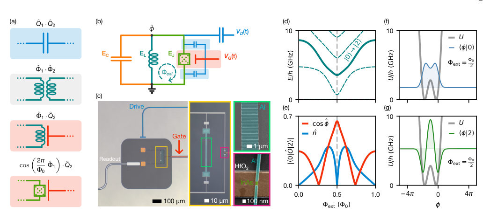
<figcaption class="paper-figure-caption"><b>Fig 1.</b> FIG. 1. Flux-charge coupling in a nanowire fluxonium. a, Different coupling methods in superconducting circuits. Capacitive or inductive interactions between two modes lead to charge-charge or flux-flux coupling operators, while a composite flux-charge interaction can be accessed by a hypothetical capacitor-inductor element. A gate-tunable Josephson junction with parametrically modulated gate voltage can provide such an interaction in practice. b, Circuit diagram of the superconductor-semiconductor hybrid nanowire fluxonium, where a drive line is capacitively coupled (blue), and a gate line placed underneath the junction provides the flux-charge coupling (red) in addition to parasitic...</figcaption>
</figure>
<figure class="paper-figure-card">
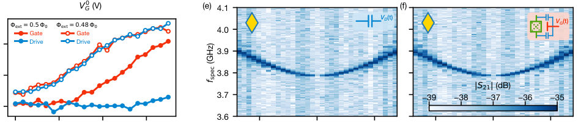
<figcaption class="paper-figure-caption"><b>Fig 2.</b> FIG. 2. Isolating flux-charge interaction in the fluxonium a, Two-tone spectroscopy of the second excited state as a function of gate voltage at Φext ≈0.48 Φ0. Two working points with the same Josephson energy are identified at a high-slope region (green star) and a flat region (yellow diamond). b, e, Two-tone spectroscopy as a function of external flux around half-flux quantum measured by purely capacitive excitation (through the drive line), at the high-slope and flat working points. The |0⟩→|2⟩transition exactly at half-flux quantum is forbidden. c, f, Two-tone spectroscopy as a function of external flux when the excitation is applied through the gate line. The |0⟩→|2⟩transition at...</figcaption>
</figure>
<figure class="paper-figure-card">
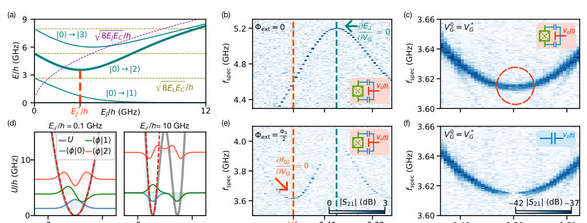
<figcaption class="paper-figure-caption"><b>Fig 3.</b> FIG. 3. The ChIVE transition in fluxonium a, Fluxonium transitions (cyan) as a function of Josephson energy at Φext = Φ0/2. The asymptotic transition frequencies are shown as gold and purple dashed lines, corresponding to the low and high Josephson energy limit, respec- tively. As EJ increases, the fluxonium transitions move between these asymptotic values. The Charge-Insensitive-with-Variable-EJ (ChIVE) point at E∗ J is identified as a local minimum in the |0⟩→|2⟩transition frequency, where ∂f02/∂EJ = 0 (red dashed line). d, Fluxonium potential and wavefunctions in the low (left) and high Josephson energy regime (right). The potential shifts from being approximated by a single harmonic...</figcaption>
</figure>
<figure class="paper-figure-card">
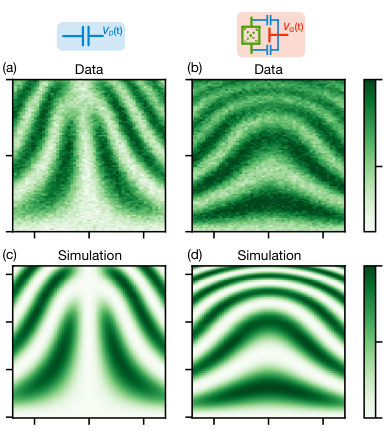
<figcaption class="paper-figure-caption"><b>Fig 4.</b> FIG. 4. Coherent control with flux-charge coupling on the |0⟩→|2⟩transition a, b, Amplitude Rabi measurement as a func- tion of external flux on the |0⟩→|2⟩transition at V ∗ G by applying the excitation through the gate and drive lines. The drive frequency of the Rabi pulse is kept fixed throughout the flux sweep at the transi- tion frequency measured at frustration. Exactly at the half-flux point, coherent Rabi oscillations appear through flux-charge coupling but disappear when purely capacitive coupling is used to excite the tran- sition. c, d, Numerical simulation of the Rabi experiments by apply- ing (c) only capacitive or (d) both capacitive and flux-charge drive terms. In the...</figcaption>
</figure>
<figure class="paper-figure-card">
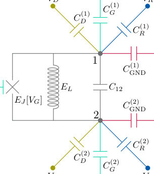
<figcaption class="paper-figure-caption"><b>Fig 5.</b> FIG. 5. Circuit schematic of the gate tunable fluxonium device.</figcaption>
</figure>
</div>

<p><strong>Summary.</strong> The research demonstrates the observation of a coherent flux-charge interaction within a gate-tunable fluxonium qubit. By exploiting parity selection rules in two-tone spectroscopy, the authors successfully isolate this coupling from standard capacitive interactions. This breakthrough provides superconducting circuits with a vital missing primitive for advanced quantum control.</p>
<p><strong>Why it may be interesting.</strong> This work directly addresses a fundamental limitation in superconducting circuit design by engineering a previously inaccessible coupling term ($\hat{U}_{FC}$), which is crucial for building more complex quantum gates and readouts.</p>
<details>
<summary>Detailed structure</summary>
<p><strong>Main problem.</strong> The primary challenge is demonstrating a direct flux-charge coupling interaction ($\hat{U}_{FC}$) in superconducting circuits, as native couplings are typically restricted to charge-to-charge or flux-to-flux interactions.</p>
<p><strong>Main result.</strong> The authors successfully demonstrated this unconventional flux-charge coupling using a gate-tunable Josephson junction, enabling coherent control that is robust and scales linearly with the driving amplitude.</p>
<p><strong>Method.</strong> They employed two-tone spectroscopy measurements combined with parity selection rules to isolate and confirm the presence of the desired $\hat{U}_{FC}$ term from parasitic capacitive couplings.</p>
<p><strong>Model / system.</strong> The system is a hybrid superconducting-semiconductor fluxonium qubit. The Hamiltonian includes terms for capacitance, Josephson energy (tunable by gate voltage), and external flux bias. The coupling mechanism relies on modulating the junction's critical current via an applied gate voltage.</p>
<p><strong>Key observables.</strong> Cross-quadrature coupling between flux ($\hat{\Phi}$) and charge ($\hat{Q}$); detection of $|0
angle 	o |2
angle$ transitions using two-tone spectroscopy as a function of external flux and gate voltage.</p>
<p><strong>Important parameters / regimes.</strong> The coupling scales linearly with driving amplitude; the method identifies a 'Charge-Insensitive' sweet spot that protects the transition energy from first-order variations in gate voltage.</p>
<p><strong>Assumptions / limitations.</strong> The analysis critically relies on exploiting parity selection rules to distinguish between different types of couplings, and simulations neglect relaxation/dephasing during pulse evolution.</p>
<p><strong>Figures summary.</strong> Figures illustrate the physical setup showing the tunable junction; spectroscopy results compare forbidden transitions (capacitive only) versus detectable transitions (flux-charge coupling active) at half-flux quantum.</p>
<p><strong>Paper structure.</strong> The paper progresses from identifying the theoretical necessity of $\hat{U}_{FC}$ to detailing the experimental platform and measurement techniques. It uses spectroscopic measurements comparing different driving mechanisms to isolate and quantify the unique flux-charge interaction, concluding with robustness analysis (ChIVE point).</p>
</details>
<details>
<summary>Abstract</summary>
<p>Interactions that mix conjugate variables, such as the flux through a circuit element and the charge across it, lie outside the reach of the elementary couplings of superconducting circuits. Capacitors connect charge to charge, and inductors connect flux to flux, while no two-terminal element couples flux to charge directly. A native flux-charge coupling would thus serve as a circuit primitive in its own right, opening direct routes to non-reciprocity, protected modes, and unconventional readout. In this work, we demonstrate a flux-charge coupling by harnessing a voltage-tunable Josephson junction with parametrically modulated critical current, which mediates the interaction between a classical charge variable and a quantum flux operator. Relying on parity-selection rules in a hybrid superconducting-semiconductor fluxonium, we isolate the flux-charge coupling from other parasitic capacitive contributions and perform cross-quadrature-activated coherent control of states. Critically, we realize a flux-charge coupling that scales linearly with driving amplitude while keeping the transition energy first-order-insensitive to gate voltage. Such unconventional interaction broadens the toolbox of superconducting circuits with a critical missing component that enables the coherent coupling of conjugate variables.</p>
</details>
<p><sub><a href="#top">↑ back to top</a></sub></p>

<p><a id="paper-2607.08212"></a></p>
<h3 id="mobius-guided-diagonal-gate-compilation-with-native-multiqubit-controlled-phase-gates-on-neutral-atom-processors"><a href="http://arxiv.org/abs/2607.08212v1">Möbius-Guided Diagonal-Gate Compilation with Native Multiqubit Controlled-Phase Gates on Neutral-Atom Processors</a></h3>
<p><strong>Authors:</strong> Hairuo Huang, Yanwu Gu, Chen Huang, Xi Zhao, Meng-Jun Hu, Dong E. Liu, Jingbo Wang<br>
<strong>Type:</strong> theory · <strong>Category:</strong> quantum information and computing · <strong>PDF:</strong> <a href="https://arxiv.org/pdf/2607.08212v1">https://arxiv.org/pdf/2607.08212v1</a><br>
<strong>Analysis basis:</strong> full PDF text, analyzed in chunks
<strong>Topic relevance:</strong> 🔥 <code>Rydberg arrays</code> <strong>4/5</strong> · <code>QC/QI experiment</code> <strong>1/5</strong></p>
<div class="figure-strip-hint">↔ Scroll figures horizontally</div>
<div class="paper-figures-scroll">
<figure class="paper-figure-card">
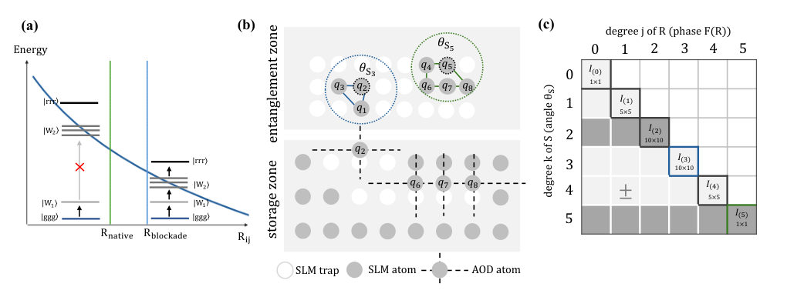
<figcaption class="paper-figure-caption"><b>Fig 1.</b> FIG. 1. (a) Schematic of interaction energies. Variation of the van der Waals frequency shift V (Rij) = C6/R6 ij (blue) with interatomic distance Rij for the ground state |ggg⟩, single-excited state |W1⟩, doubly excited state |W2⟩, and excited state |rrr⟩. (b) Neutral atom layout with separated storage and computation regions. The figure shows a three-atom support set S3 = {q1, q2, q3} (θS3, blue) and a five-atom support set S5 = {q4, . . . , q8} (θS5, green). (c) In the degree-graded basis, the M¨obius matrix M = ζ−1 = µ⊗n 1 takes a block lower-triangular form with identity diagonal blocks I(k) of size n k  .</figcaption>
</figure>
<figure class="paper-figure-card">
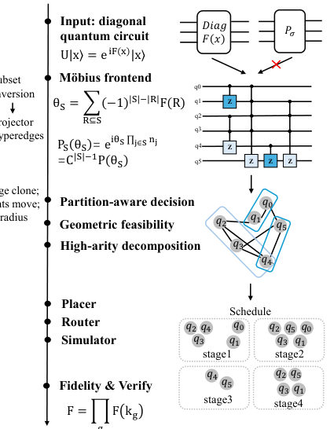
<figcaption class="paper-figure-caption"><b>Fig 2.</b> FIG. 2. The M¨obius Compiler for Atoms pipeline. A diag- onal algorithm is M¨obius-inverted into projector hyperedges, synthesized as native occupation-projector gates or decom- posed (Layer 1), ASAP-scheduled (Layer 2), routed on the storage/entanglement-zoned architecture (Layer 3), and ver- ified bit-exactly (Layer 4). The M¨obius-native and ZAP- decomposed strategies differ only at the synthesis step and share the scheduler, router, and fidelity model.</figcaption>
</figure>
<figure class="paper-figure-card">
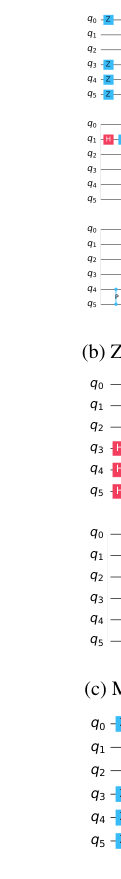
<figcaption class="paper-figure-caption"><b>Fig 3.</b> FIG. 3. Circuit decomposition comparison for the same compact 6-qubit 3-SAT oracle instance. Panels (a)–(c) show the original ZAP decomposition, the ZX no-insert-calculus decomposition, and the M¨obius-native decomposition, respectively. ZAP lowers the M¨obius projector terms to one- and two-qubit gates, ZX extracts a different no-insertion phase circuit from the standard input circuit, and the M¨obius-native path keeps the occupation-projector supports as native phase gates. In the drawing, single-qubit phases with angle ±π/4 are displayed as T and T † gates, RZ angles in panel (b) are shown modulo 2π for compactness, and projector phases are displayed as Z gates or filled-dot...</figcaption>
</figure>
<figure class="paper-figure-card">
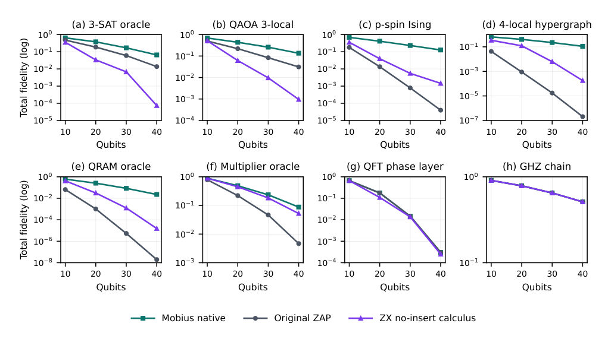
<figcaption class="paper-figure-caption"><b>Fig 4.</b> FIG. 4. Performance comparison for eight common algorithmic benchmark families. Each panel plots routed total fidelity on a logarithmic scale versus qubit count for the M¨obius-native compiler, the original ZAP decomposed baseline, and the ZX no-insert-calculus baseline. The first six panels are Hamiltonian or oracle benchmarks with explicit many-body interaction terms, where native multiqubit execution can reduce decomposed gate exposure and scheduled stages. The last two panels are two-body controls, where the three compilation paths are expected to be similar.</figcaption>
</figure>
<figure class="paper-figure-card">
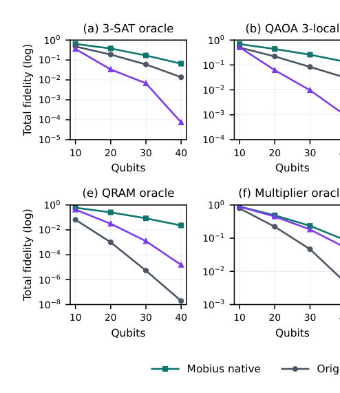
<figcaption class="paper-figure-caption"><b>Fig 5.</b> Figure 6 extends the comparison to larger systems us- ing timing quantities rather than final no-fault success. The top row plots total routed circuit duration for 3-SAT, p-spin Ising, and QRAM from 20 to 100 qubits. These benchmark families were chosen because they represent three different many-body sources: Boolean clause ora- cles, local diagonal Hamiltonian terms, and multi-control addressing. In all three cases, M¨obius-native compila- tion gives shorter routed duration. The reason is the same mechanism seen in Fig. 5 and Appendix D: the na- tive path reduces serialized decomposed work and often avoids repeated movement into the entanglement zone. The duration advantage is...</figcaption>
</figure>
</div>

<p><strong>Summary.</strong> This paper introduces a Möbius-guided compiler designed to efficiently compile diagonal phase gates for neutral-atom quantum processors. It uses subset-lattice Möbius inversion to represent these complex phases as a 'phase hypergraph,' preserving high-order structure. This allows the scheduler to optimally choose between executing native, hardware-efficient multiqubit controlled-phase operations or resorting to standard gate decompositions.</p>
<p><strong>Why it may be interesting.</strong> It provides a rigorous mathematical bridge between abstract quantum circuit requirements (diagonal phases) and the specific physical capabilities of emerging hardware platforms like neutral atoms, which is crucial for advancing fault-tolerant quantum computation.</p>
<details>
<summary>Detailed structure</summary>
<p><strong>Main problem.</strong> Standard quantum compilers fail to exploit native, high-order multiqubit controlled-phase gates available on neutral-atom hardware because they prematurely decompose diagonal gate structures.</p>
<p><strong>Main result.</strong> A Möbius-guided compiler was developed that maps the phase function to a phase hypergraph, achieving improved estimated success and stage reduction for algorithms with exploitable three- or four-body phase terms.</p>
<p><strong>Method.</strong> The method uses subset-lattice Möbius inversion to transform an arbitrary diagonal phase function into its irreducible projector-phase components, forming a phase hypergraph representation.</p>
<p><strong>Model / system.</strong> The work is situated on neutral-atom processors utilizing Rydberg-mediated interactions. The core primitive is the occupation-projector phase $ ext{PS}(    heta) = \exp\left(i heta \sum_{j\in S} n_j
ight)$.</p>
<p><strong>Key observables.</strong> Estimated no-fault success, scheduled-stage count, and gate counts compared across compilation strategies (Möbius native vs. ZAP/ZX baselines).</p>
<p><strong>Important parameters / regimes.</strong> The support set $S$ of the phase term, the angle $  heta$, and hardware constraints like atom motion and blockade feasibility.</p>
<p><strong>Assumptions / limitations.</strong> The compiler assumes that if a high-order phase is mathematically recoverable via Möbius inversion, it can be physically routed as a native Rydberg-mediated controlled-phase gate when feasible.</p>
<p><strong>Figures summary.</strong> Figures illustrate the schematic basis for Rydberg interactions ($V_{ij} \propto C_6/R_{ij}^6$), the physical layout showing support sets $S$ on neutral atoms, and the mathematical structure of the Möbius inverse transform in a degree-graded ordering.</p>
<p><strong>Paper structure.</strong> The paper establishes the problem by noting compiler limitations, introduces the Möbius-guided compilation framework using subset-lattice inversion to generate a phase hypergraph, details how this maps onto native Rydberg gates, and validates the approach via benchmarks showing improved scheduling metrics.</p>
</details>
<details>
<summary>Abstract</summary>
<p>Diagonal gates are ubiquitous primitives in quantum algorithms, from phase oracles, hypergraph-state preparation, and multi-control logic to Hamiltonian simulation of spin models and digitized lattice field theories, where Ising interactions and local potential terms are diagonal in the encoded basis. Standard compilers, however, often lower diagonal structure into one- and two-qubit gates before neutral-atom hardware can exploit native Rydberg-mediated multiqubit controlled-phase operations. We propose a Möbius-guided compiler that maps a diagonal phase function to a phase hypergraph via subset-lattice Möbius inversion. The hypergraph retains the support and angle of each many-body phase term, allowing sparse or local high-order structure to be routed as native multiqubit controlled-phase candidates when feasible and decomposed otherwise. The neutral-atom scheduler accounts for atom motion, interaction-zone constraints, blockade feasibility, and error costs, enabling a direct comparison between native high-order execution and decomposed alternatives. Benchmarks against routed ZAP and ZX-calculus baselines show improved estimated success for algorithmic instances with exploitable three- and four-body phase terms, and comparable performance on predominantly two-body instances. These results provide a feasible compilation strategy for more fully exploiting the native capabilities of neutral-atom hardware, using atom reconfigurability and Rydberg-mediated multiqubit phase operations as practical resources for more efficient quantum computation.</p>
</details>
<p><sub><a href="#top">↑ back to top</a></sub></p>

<p><a id="paper-2607.07874"></a></p>
<h3 id="unveiling-semiclassical-structures-in-quantum-chaotic-eigenstates-using-neural-networks"><a href="http://arxiv.org/abs/2607.07874v1">Unveiling Semiclassical Structures in Quantum Chaotic Eigenstates Using Neural Networks</a></h3>
<p><strong>Authors:</strong> J. Montes, F. Borondo, Gabriel G. Carlo<br>
<strong>Type:</strong> theory · <strong>Category:</strong> numerical methods · <strong>PDF:</strong> <a href="https://arxiv.org/pdf/2607.07874v1">https://arxiv.org/pdf/2607.07874v1</a><br>
<strong>Analysis basis:</strong> full PDF text, analyzed in chunks
<strong>Topic relevance:</strong> 🔥 <code>scars &amp; prethermalization</code> <strong>4/5</strong> · <code>methods for driven-dissipative</code> <strong>1/5</strong></p>
<div class="figure-strip-hint">↔ Scroll figures horizontally</div>
<div class="paper-figures-scroll">
<figure class="paper-figure-card">
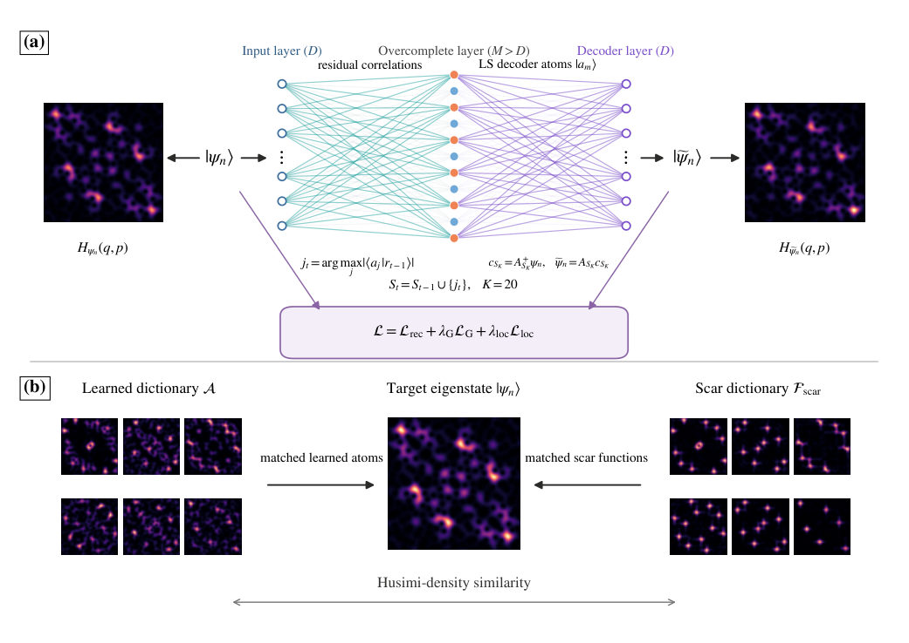
<figcaption class="paper-figure-caption"><b>Fig 1.</b> FIG. 1. Architecture and dictionary-comparison scheme. (a) A normalized quantum-baker eigenstate is represented by its complex components and its Husimi density. The sparse dictionary network has widths D →M →D, with M &gt; D. The active support is selected by residual correlations, as in complex orthogonal matching pursuit, and the decoder reconstructs the state by a least-squares recombination of the selected atoms. Training combines phase-insensitive reconstruction, dictionary-overlap diversity, and phase-space-localization losses. (b) The learned and independently constructed scar dictionaries provide two overcomplete representations of the same eigenstate. The six elements displayed on...</figcaption>
</figure>
<figure class="paper-figure-card">
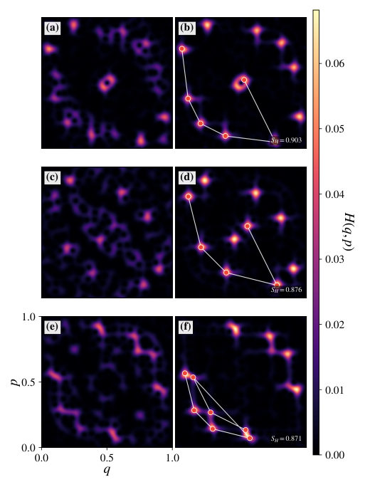
<figcaption class="paper-figure-caption"><b>Fig 2.</b> FIG. 3. Three learned atoms (left column) and the inde- pendently generated scar function selected after training by Husimi-density morphology, with substantial Hilbert-space overlap (right column). The associated periodic orbit is over- laid on each scar Husimi density. From top to bottom, the pairs are (m, r) = (90, 69), (128, 37), and (147, 186), with squared overlaps 0.6659, 0.5057, and 0.6893. The binary strings labeling the orbits are 000011, 00011, and 0001001, re- spectively. Their Husimi-density similarities are 0.903, 0.876, 000011, 00011, and 0001001, respectively. Their Husimi- density similarities are 0.903, 0.876, and 0.871, respectively.</figcaption>
</figure>
<figure class="paper-figure-card">
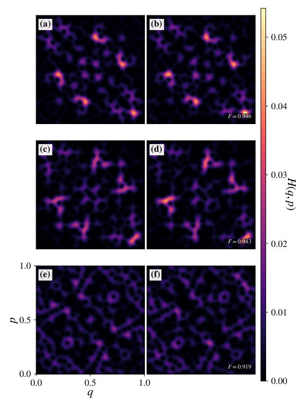
<figcaption class="paper-figure-caption"><b>Fig 3.</b> FIG. 2. Husimi densities of three validation eigenstates (left column) and their OMP+least-squares sparse reconstructions (right column). All six panels use one common color scale. The selected state indices are 63, 208, and 232; their fidelities are 0.9456, 0.9431, and 0.9187, respectively. Only K = 20 of the M = 290 learned atoms contribute to each reconstruction.</figcaption>
</figure>
<figure class="paper-figure-card">
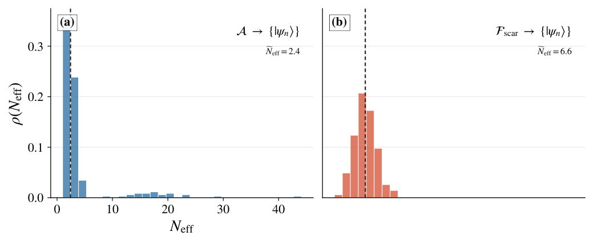
<figcaption class="paper-figure-caption"><b>Fig 4.</b> FIG. 4. Distribution, over all D = 242 quantum-baker eigenstates, of the effective projection participation Neff for (a) the learned dictionary and (b) the independently constructed scar dictionary. Dashed lines mark medians, 2.427 and 6.585, respectively. The corresponding means are 3.991 and 6.603. Keep in mind that dictionaries are nonorthogonal thus this measure does not reflect an exact expansion.</figcaption>
</figure>
</div>

<p><strong>Summary.</strong> The paper uses neural networks to learn an overcomplete dictionary representation for highly complex, chaotic quantum eigenstates. By constraining this learning process with phase-space localization, the model forces its learned building blocks (atoms) to spontaneously organize around structures corresponding to classical periodic orbits. This shows that simple geometric constraints can unlock deep semiclassical physics from purely spectral data.</p>
<p><strong>Why it may be interesting.</strong> This work demonstrates a powerful data-driven method for extracting fundamental physical symmetries (like those dictated by classical periodic orbits) from raw quantum spectral data without explicit knowledge of the underlying Hamiltonian dynamics or symmetry operators.</p>
<details>
<summary>Detailed structure</summary>
<p><strong>Main problem.</strong> The study investigates whether unsupervised learning can reveal the underlying semiclassical structure of quantum chaotic eigenstates.</p>
<p><strong>Main result.</strong> By imposing phase-space localization constraints on a neural network dictionary, the learned atoms spontaneously localize onto periodic orbits and develop scar-like structures, confirming their fundamental role in chaos.</p>
<p><strong>Method.</strong> The authors train an overcomplete autoencoder ('quantum dictionary') to sparsely represent eigenstates, comparing its learned structure against independently constructed semiclassical dictionaries based on periodic orbits.</p>
<p><strong>Model / system.</strong> The analysis uses the quantum baker map as a model for a quantum chaotic system. States are analyzed using phase-space representations like the Husimi density.</p>
<p><strong>Key observables.</strong> Reconstruction fidelity ($F$), Hilbert-space overlap ($\Omega_{mr}$), and Effective Participation Number ($N_{	ext{eff}}$).</p>
<p><strong>Important parameters / regimes.</strong> The dictionary size ($M$) relative to the state dimension ($D$), and regularization weights ($\lambda_G, \lambda_{loc}$).</p>
<p><strong>Assumptions / limitations.</strong> The primary assumption is that phase-space localization constraints are sufficient to recover nontrivial semiclassical organization from spectral data.</p>
<p><strong>Figures summary.</strong> Figures compare learned atoms' Husimi densities against known scar functions, showing structural alignment and high overlap ($ ext{SH} \approx 0.9$).</p>
<p><strong>Paper structure.</strong> The paper introduces the problem of characterizing chaotic eigenstates, details the autoencoder setup with localization constraints, presents the semiclassical dictionary construction, and concludes by comparing the learned structures to show emergent periodic orbit organization.</p>
</details>
<details>
<summary>Abstract</summary>
<p>Physics-informed neural networks and neural quantum states have consolidated a new paradigm to analyze and discover physical phenomena through constrained neural parametrizations. In this context, we investigate whether the semiclassical structure of the eigenfunctions of a quantum chaotic system can be unveiled through unsupervised learning. To this end, we train a "quantum dictionary", formulated as an overcomplete autoencoder, that sparsely represents the eigenstates of the system, using as an illustration the quantum baker map. The only explicit physical information imposed on the dictionary atoms is their localization in phase space, without providing any kind of information about the periodic orbits of the corresponding classical system. The model achieves high fidelity in reconstructing eigenstates not used during training. By comparing the learned atoms with an independently constructed "semiclassical dictionary", we find that they spontaneously localize on the periodic orbits and develop scar-like structures. This result is interesting in two ways: a localization constraint is sufficient to recover nontrivial semiclassical organization from spectral data and at the same time periodic orbits confirm their fundamental role in the structure of quantum chaotic eigenfunctions. More generally, our proposed architecture opens a new route to learning representations whose atoms optimize other chosen physical properties.</p>
</details>
<p><sub><a href="#top">↑ back to top</a></sub></p>

<p><a id="paper-2607.07913"></a></p>
<h3 id="a-majorization-relation-for-a-sum-of-two-tensor-products-of-positive-semidefinite-operators"><a href="http://arxiv.org/abs/2607.07913v1">A majorization relation for a sum of two tensor products of positive semidefinite operators</a></h3>
<p><strong>Authors:</strong> Mohammad A. Alhejji, Cole Kelson-Packer<br>
<strong>Type:</strong> theory · <strong>Category:</strong> quantum information and computing · <strong>PDF:</strong> <a href="https://arxiv.org/pdf/2607.07913v1">https://arxiv.org/pdf/2607.07913v1</a><br>
<strong>Analysis basis:</strong> full PDF text, analyzed in chunks
<strong>Topic relevance:</strong> 🔥 <code>entanglement &amp; information structure</code> <strong>4/5</strong></p>
<div class="figure-strip-hint">↔ Scroll figures horizontally</div>
<div class="paper-figures-scroll">
<figure class="paper-figure-card">
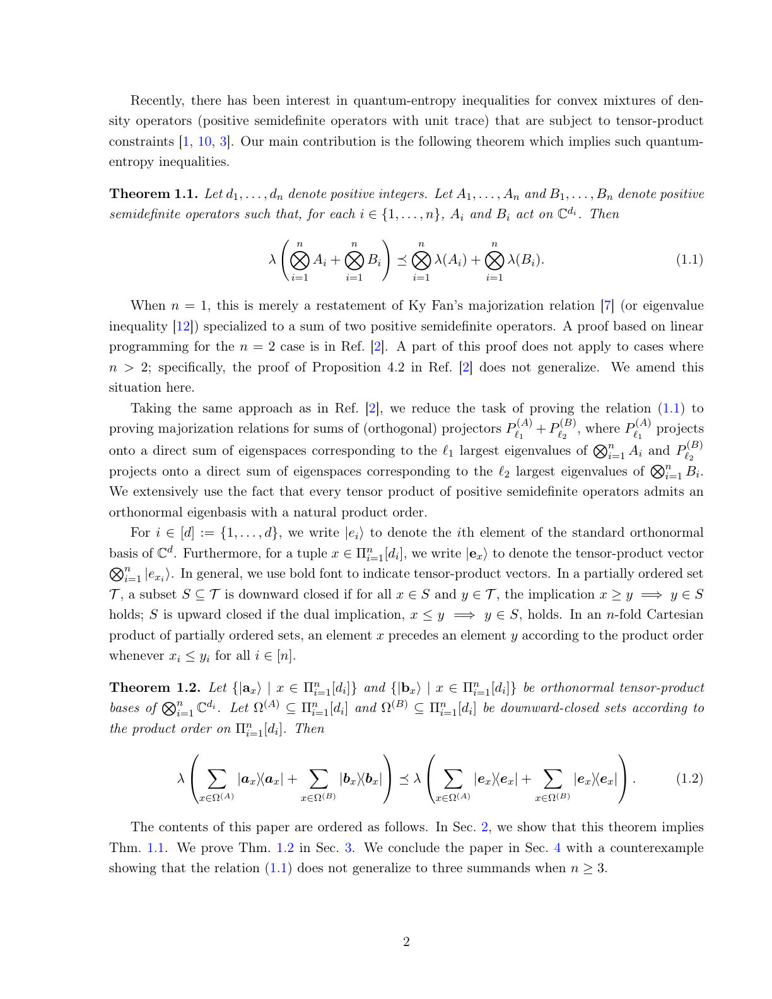
<figcaption class="paper-figure-caption"><b>Fig 1.</b> Low-resolution page preview, page 2</figcaption>
</figure>
<figure class="paper-figure-card">
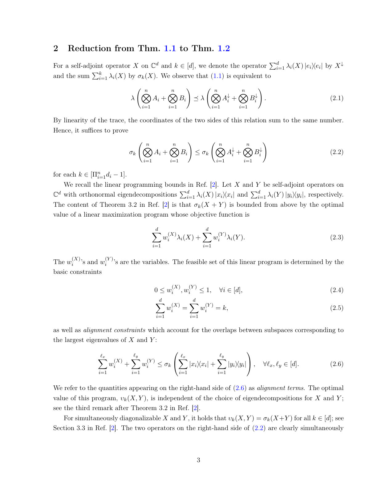
<figcaption class="paper-figure-caption"><b>Fig 2.</b> Low-resolution page preview, page 3</figcaption>
</figure>
<figure class="paper-figure-card">
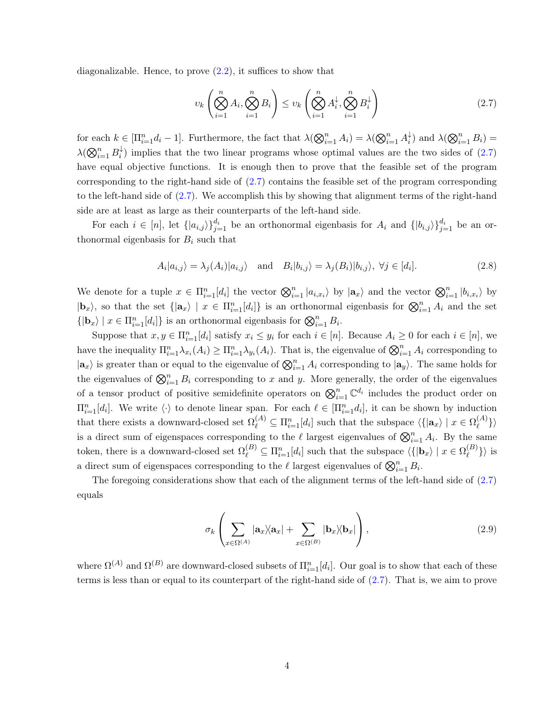
<figcaption class="paper-figure-caption"><b>Fig 3.</b> Low-resolution page preview, page 4</figcaption>
</figure>
<figure class="paper-figure-card">
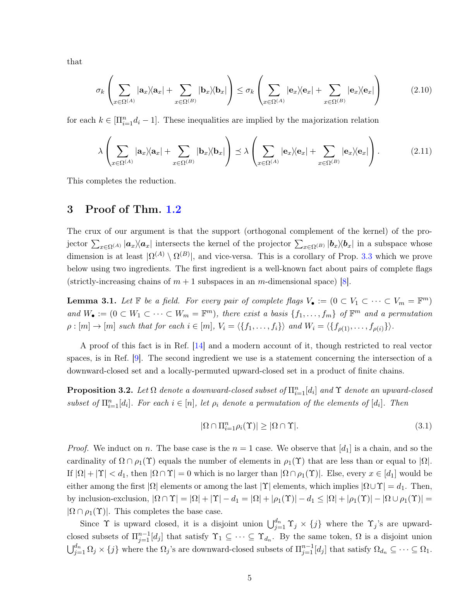
<figcaption class="paper-figure-caption"><b>Fig 4.</b> Low-resolution page preview, page 5</figcaption>
</figure>
<figure class="paper-figure-card">
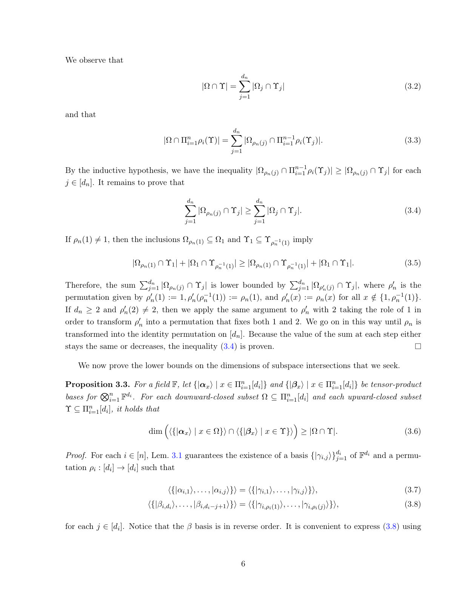
<figcaption class="paper-figure-caption"><b>Fig 5.</b> Low-resolution page preview, page 6</figcaption>
</figure>
</div>

<p><strong>Summary.</strong> This theoretical paper proves a majorization relation concerning the sum of two operators, each being a tensor product of multiple positive semidefinite components. The proof utilizes advanced linear programming techniques applied to index set combinatorics. It advances the mathematical understanding of operator inequalities in high-dimensional quantum systems while also mapping out the precise limits where these relations break down.</p>
<p><strong>Why it may be interesting.</strong> Majorization relations are fundamental tools for comparing quantum states or operators (e.g., entanglement measures). Establishing such structural inequalities for tensor products is crucial for understanding multipartite quantum correlations and resource theories.</p>
<details>
<summary>Detailed structure</summary>
<p><strong>Main problem.</strong> The paper aims to prove a separable version of Ky Fan's majorization relation for the sum of two operators, where each operator is constructed as a tensor product of multiple positive semidefinite (PSD) operators.</p>
<p><strong>Main result.</strong> A specific majorization relation ($    ext{Theorem 1.1}$) is proven using linear programming techniques, although the authors also provide counterexamples showing that this relation fails for sums involving three or more tensor products.</p>
<p><strong>Method.</strong> The proof heavily relies on linear programming methods and establishing inequalities related to the dimensions of intersections between subspaces defined by downward-closed and upward-closed sets in product index spaces.</p>
<p><strong>Model / system.</strong> The mathematical framework involves operators acting on high-dimensional Hilbert spaces ($\mathbb{C}^{d_1 	imes \cdots 	imes d_n}$) that are structured as sums of tensor products of local PSD operators. This structure is relevant to analyzing quantum correlations or entanglement measures.</p>
<p><strong>Key observables.</strong> The primary observables are the eigenvalues ($\lambda$) of the sum of projected operators, and the dimension of intersections between subspaces defined by index sets $\Omega$ and $\Upsilon$.</p>
<p><strong>Important parameters / regimes.</strong> The number of tensor product factors ($n$), the number of summands (two in the main theorem), and the dimensions $d_i$ are key parameters.</p>
<p><strong>Assumptions / limitations.</strong> The proof technique is established for a specific case ($n=2$) using linear programming, and counterexamples demonstrate limitations when generalizing to more terms or factors.</p>
<p><strong>Paper structure.</strong> The paper introduces the majorization problem ($   ext{Theorem 1.1}$), reduces it to an inequality involving projectors ($ ext{Theorem 1.2}$), and proves this latter theorem using combinatorial inequalities derived from properties of product spaces, culminating in counterexamples showing limitations.</p>
</details>
<details>
<summary>Abstract</summary>
<p>We use linear programming to prove a separable version of Ky Fan's majorization relation for a sum of two operators that are each a tensor product of $n$ positive semidefinite operators. We give an example showing that such a relation does not hold in general for sums of three or more tensor products of three or more positive semidefinite operators.</p>
</details>
<p><sub><a href="#top">↑ back to top</a></sub></p>

<p><a id="paper-2607.08450"></a></p>
<h3 id="exactly-solved-schrodinger-equations-with-time-dependent-hamiltonians"><a href="http://arxiv.org/abs/2607.08450v1">Exactly solved Schrödinger equations with time-dependent Hamiltonians</a></h3>
<p><strong>Authors:</strong> Michael Warnock, Antônio Francisco Neto, Pierre-Louis Giscard, Omid Faizy, Christian Joachim<br>
<strong>Type:</strong> theory · <strong>Category:</strong> other · <strong>PDF:</strong> <a href="https://arxiv.org/pdf/2607.08450v1">https://arxiv.org/pdf/2607.08450v1</a><br>
<strong>Analysis basis:</strong> full PDF text, analyzed in chunks
<strong>Topic relevance:</strong> <code>exotic spin models in light-matter</code> <strong>3/5</strong> · <code>methods for driven-dissipative</code> <strong>3/5</strong> · <code>spintronics-quantum-optics interface</code> <strong>3/5</strong> · <code>Keldysh / 2PI / non-Gaussian methods</code> <strong>2/5</strong> · <code>analog quantum simulation</code> <strong>2/5</strong> · <code>non-equilibrium dynamics</code> <strong>2/5</strong> · <code>Tavis-Cummings &amp; cavity-many-emitter</code> <strong>1/5</strong> · <code>correlated cavity matter</code> <strong>1/5</strong> · <code>driven-dissipative phase transition</code> <strong>1/5</strong> · <code>non-equilibrium universality</code> <strong>1/5</strong></p>
<div class="figure-strip-hint">↔ Scroll figures horizontally</div>
<div class="paper-figures-scroll">
<figure class="paper-figure-card">
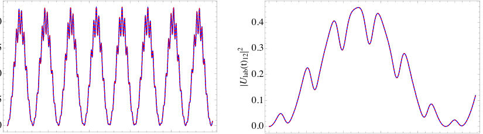
<figcaption class="paper-figure-caption"><b>Fig 1.</b> Figure 1. Evolution of the transition probability P|0yÑ|1yptq :“ |Ulabptq12|2 “ 1´|Ulabptq11|2 as a function of time as determined by a fully numerical solver (solid blue line) and exact analytical solution Eq. (32b) plotted from its truncation |Up3,2q 12 |2 (dashed red line). Parameters for the top figure: ω0{|S1 ´ S0| “ 10, g “ 0.1, e0 “ ω0. This is a high-frequency case since ω0 &quot; S1 ´ S0. Parameters for the bottom figure: ω0{|S1 ´ S0| “ 0.9, g “ 0.1, e0 “ ω0. Remark that the parameters of the up figure are not suited to the high-frequency approximation, as ω0 „ |S1 ´ S0|, and also lie beyond the RWA approximation. In both cases, the analytical results flawlessly match the fully...</figcaption>
</figure>
<figure class="paper-figure-card">
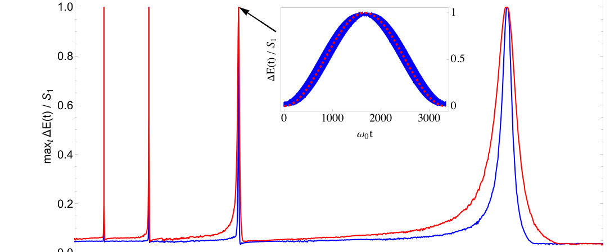
<figcaption class="paper-figure-caption"><b>Fig 2.</b> Figure 2. Numerical simulations of the quantity maxt ∆Eptq{S1 “ maxt P|0yÑ|1yptq as a function of ω0 for S0 “ Γ “ 0, S1 “ 1, ε0 “ S1 ´ S0 “ 1, g “ |S1 ´ S0|{10 and e0 “ |S1 ´ S0|{10 (blue line) or e0 “ |S1 ´ S0|{5 (red line). Parametric resonances occur very close to the low fractional frequencies ω0 » |S1 ´ S0|, ω0 » |S1 ´ S0|/2, ω0 » |S1 ´ S0|/3 etc. They are shifted from those exact values by Bloch-Siegert-like shifts. Further resonant peaks for m ě 5 are not shown here. Numerical simulations for those get harder as m increases: not only are those resonances narrower but the simulation times required to reliably evaluate maxt P|0yÑ|1yptq grow extremely fast with m. Indeed resonances at...</figcaption>
</figure>
<figure class="paper-figure-card">
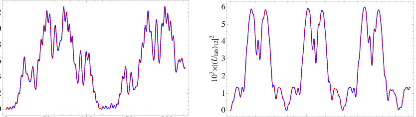
<figcaption class="paper-figure-caption"><b>Fig 3.</b> Figure 3. Evolution of the transition probability P|0yÑ|1yptq :“ |Ulabptq12|2 “ 1´|Ulabptq11|2 as a function of time as determined by a fully numerical solver (solid blue line) and analytical truncation |U p3,4q 12 |2 (top figure, dashed red line) or |U p2,2q 12 |2 (bottom figure, dashed red line) of the exact solution Eqs. (42a, 42b). Parameters for the top figure: ω0{|S1´S0| “ 0.45, ω{|S0´S1| “ 2, g “ 0.1, e0 “ 2ω0. In this situation, all three frequencies in the system are comparable, a regime unsuitable to both the RWA and the high-frequency expansion. The “erratic” behavior of the solution due to the mixing comparable system frequencies is perfectly captured by the analytical...</figcaption>
</figure>
<figure class="paper-figure-card">
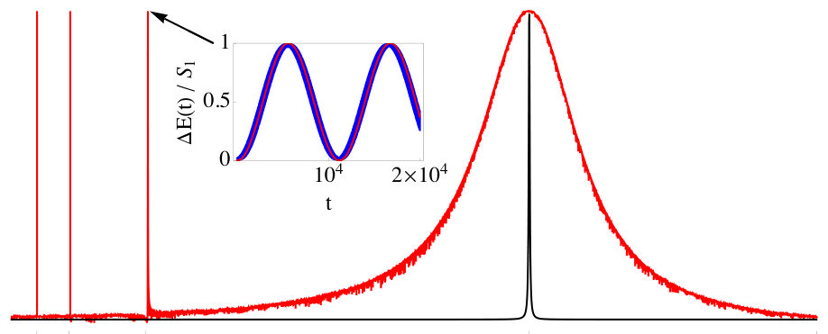
<figcaption class="paper-figure-caption"><b>Fig 4.</b> Figure 4. Profile of maxt ∆Eptq{S1 as a function of ω in the Bloch-Siegert Hamiltonian for g “ |S1 ´ S0|{10 (red curve) and g “ |S1 ´ S0|{1000 (black curve). Resonances occur whenever ε0 is an odd multiple of ω. In inset, numerical simulation of ∆Eptq{S1 “ P|0yÑ|1yptq as a function of t for ε0 “ ω{0.3371 (blue line) together with the prediction of Eq. (47a) (solid red line) for the long-time carrier. Parameters: S0 “ Γ “ 0, S1 “ 1, ε0 “ S0 ´ S1 ´ iΓ “ ´1 and e0 “ 0. Numerically, the resonances are located at ω{ε0 » 0.3371, 0.202068 and 0.1443048. These values are larger than 1{3, 1{5 and 1{7 due to ε0 ă 0.</figcaption>
</figure>
<figure class="paper-figure-card">
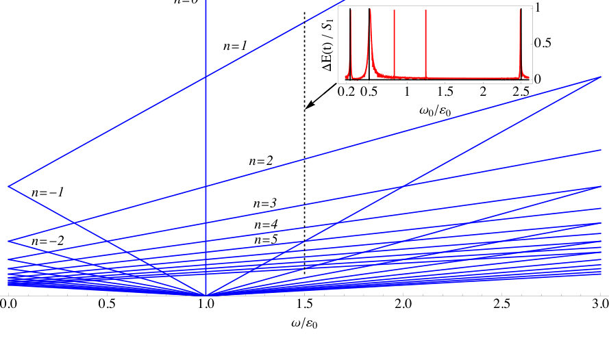
<figcaption class="paper-figure-caption"><b>Fig 5.</b> Figure 5. Location of the resonances (solid blue lines) in the pω, ω0q parameter space. As indicated by Eq. (53) the resonances are indexed by integer n P Z, here showing only ´10 ď n ď 10 for the sake of clarity. In inset, numerical simulations of maxt ∆Eptq{S1 at fixed ω{ε0 “ 3{2 as a function of ω0 for g “ |S1 ´ S0|{10 (red line) and g “ |S1 ´ S0|{1000 (black line). Note that resonances with n “ 4, 6, 7 and 8 are not visible owing to numerical issues (too narrow, required simulation times too long) and, as g diminishes, each resonance becomes narrower. Resonances at ω0{ε0 » 0.5 and 0.25 are strongly enhanced double resonances. For ω{ε0 “ 0.5, the n “ 5 line resonates with the `ω...</figcaption>
</figure>
</div>

<p><strong>Summary.</strong> This paper introduces a powerful, non-perturbative mathematical framework to find exact solutions for the evolution operators of quantum systems with time-varying Hamiltonians. By combining $\langle\cdot
angle$-algebra, path-sums, and Omega calculus, the authors overcome limitations inherent in standard approximations like Dyson series or RWA. This methodology offers a universal tool for analyzing complex dynamics in fields ranging from quantum spin batteries to general non-autonomous differential systems.</p>
<p><strong>Why it may be interesting.</strong> This is highly relevant for AMO physics as it provides rigorous mathematical tools to solve time-dependent quantum dynamics, which is crucial for understanding driven systems in quantum optics and superconducting circuits.</p>
<details>
<summary>Detailed structure</summary>
<p><strong>Main problem.</strong> The central problem is deriving analytical, exact, and assumption-free formulas for the evolution operators governing quantum systems driven by time-dependent Hamiltonians.</p>
<p><strong>Main result.</strong> The authors provide these exact solutions using a novel combination of mathematical techniques that bypass traditional perturbative expansions or approximations.</p>
<p><strong>Method.</strong> The methodology combines three advanced mathematical tools: the $\langle\cdot
angle$-algebra, path-sums (related to graph walks), and Omega calculus for systematic evaluation of resulting resolvents.</p>
<p><strong>Model / system.</strong> The work focuses on 2-level quantum systems relevant to quantum spin batteries, governed by time-dependent Schrödinger equations. The Hamiltonian can be generalized but includes specific forms involving coupling terms $\epsilon(t)$ and $\Gamma$.</p>
<p><strong>Key observables.</strong> Transition probabilities between spin states ($P_{|0
angle 	o |1
angle}(t)$) and the stored energy ($\Delta E(t)$) are key observables derived from the evolution operator $U(t,s)$.</p>
<p><strong>Important parameters / regimes.</strong> The analysis is general, claiming validity across all parameter regimes, including cases where standard approximations (like RWA) might fail.</p>
<p><strong>Assumptions / limitations.</strong> The primary strength claimed is the avoidance of assumptions; however, specific appendices discuss simplified scenarios like commuting Hamiltonians or using initial transformations for tractability.</p>
<p><strong>Figures summary.</strong> Not specified in the provided notes. The discussion references mathematical derivations (Eqs. (31), (G1), etc.) rather than figure descriptions.</p>
<p><strong>Paper structure.</strong> The paper builds from defining the general problem and introducing the novel $\langle\cdot
angle$-algebraic framework, then details how path-sums and Omega calculus evaluate the resulting resolvents. It applies this machinery to specific physical models like spin batteries (Bloch-Siegert) and Brownian motion.</p>
</details>
<details>
<summary>Abstract</summary>
<p>We present the analytical, exact, explicit, and assumption free formulas for the evolution operators corresponding to four instances of time-dependent Hamiltonians relevant to quantum spin batteries including two stochastic cases. We demonstrate how to recover and go beyond existing expansions and approximations directly from the exact solutions giving, for example, an explicit exact formula for Floquet Hamiltonians at all orders. The exact solutions are obtained through a completely novel combination of three mathematical techniques, the $\star$-algebra, path-sums and Omega calculus, which we briefly overview. These are widely applicable to other non-autonomous differential systems.</p>
</details>
<p><sub><a href="#top">↑ back to top</a></sub></p>

<p><a id="paper-2607.08294"></a></p>
<h3 id="interplay-of-quasiperiodic-criticality-and-the-non-hermitian-skin-effect"><a href="http://arxiv.org/abs/2607.08294v1">Interplay of Quasiperiodic Criticality and the Non-Hermitian Skin Effect</a></h3>
<p><strong>Authors:</strong> Zhangyuan Chen, Xianqi Tong, Xiaosen Yang<br>
<strong>Type:</strong> theory · <strong>Category:</strong> other · <strong>PDF:</strong> <a href="https://arxiv.org/pdf/2607.08294v1">https://arxiv.org/pdf/2607.08294v1</a><br>
<strong>Analysis basis:</strong> full PDF text, analyzed in chunks
<strong>Topic relevance:</strong> <code>analog quantum simulation</code> <strong>3/5</strong> · <code>driven-dissipative phase transition</code> <strong>3/5</strong> · <code>methods for driven-dissipative</code> <strong>3/5</strong> · <code>non-equilibrium universality</code> <strong>3/5</strong> · <code>Kondo &amp; dissipative impurity</code> <strong>2/5</strong> · <code>non-equilibrium dynamics</code> <strong>2/5</strong> · <code>Frenkel-Kontorova</code> <strong>1/5</strong> · <code>Keldysh / 2PI / non-Gaussian methods</code> <strong>1/5</strong> · <code>correlated / nonlocal dissipation</code> <strong>1/5</strong></p>
<div class="figure-strip-hint">↔ Scroll figures horizontally</div>
<div class="paper-figures-scroll">
<figure class="paper-figure-card">
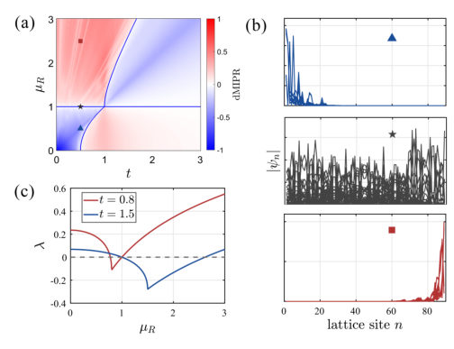
<figcaption class="paper-figure-caption"><b>Fig 1.</b> FIG. 1. (a) The dMIPR under OBC as a function of t and µR for N = 233 and θ = 0. The blue line represents the theoretical prediction from Eq. (10). The colored symbols mark the parameter points corresponding to the representa- tive eigenstates shown in (b). (b) Representative eigenstates under OBC at t = 0.5 for µR = 0.5, 1, and 2.5 from top to bottom, corresponding to the marked points in (a). (c) The analytical λ as a function of µR. The red line corresponds to t = 0.8, while the blue line represents t = 1.5.</figcaption>
</figure>
<figure class="paper-figure-card">
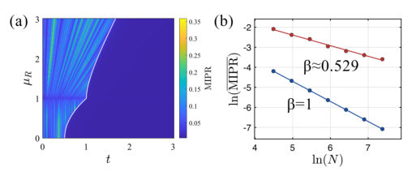
<figcaption class="paper-figure-caption"><b>Fig 2.</b> FIG. 2. (a) The MIPR under PBC as a function of t and µR for system size N = 233 and θ = 0. The white line marks the phase transition line between the extended and critical regimes. (b) Finite-size scaling of the MIPR versus system size N on a logarithmic scale. The red points correspond to the parameter set with t = 0.3 and µR = 2.5, while the blue points correspond to t = 2.5 and µR = 2. The solid lines represent power-law fits. The statistical average is performed over 103 random realizations of the global phase θ. β is the corresponding fractal dimension.</figcaption>
</figure>
<figure class="paper-figure-card">
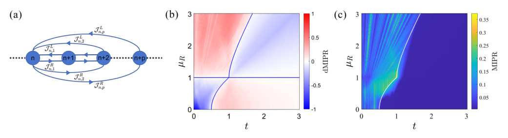
<figcaption class="paper-figure-caption"><b>Fig 3.</b> FIG. 3. (a) Schematic illustration of the HN model with long-range hoppings. (b) The dMIPR under OBC as a function of t and µR. (c) The MIPR under PBC as a function of t and µR. Panels (b) and (c) correspond to a lattice with nearest and next-nearest neighbor hoppings, for N = 233 and θ = 0.</figcaption>
</figure>
<figure class="paper-figure-card">
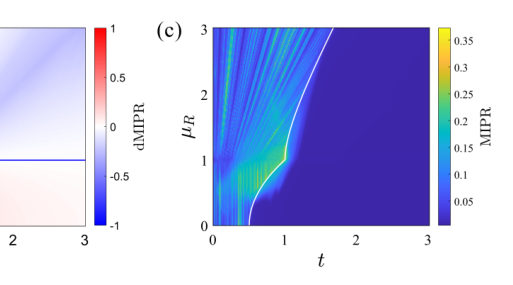
<figcaption class="paper-figure-caption"><b>Fig 4.</b> Figure 3(b) shows the dMIPR under OBC for a lattice with nearest- and next-nearest-neighbor hoppings. The phase structure is consistent with the analytical predic- tion. For comparison, the MIPR under PBC is shown in Fig. 3(c). The PBC phase diagram retains extended and critical regimes similar to those in Fig. 2(a), indicat- ing that the long-range hopping terms do not eliminate the quasiperiodic critical eigenstate structure. Combin- ing the OBC and PBC results, we find that parameter regimes hosting critical eigenstates under PBC can also exhibit the NHSE under OBC in the long-range model.</figcaption>
</figure>
<figure class="paper-figure-card">
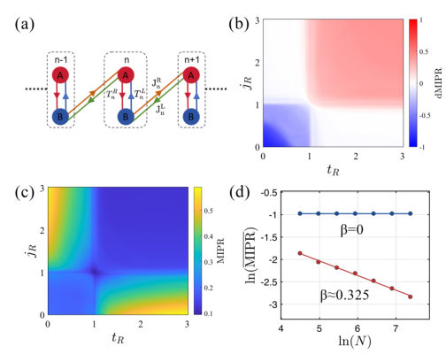
<figcaption class="paper-figure-caption"><b>Fig 5.</b> FIG. 4. (a) Schematic of the Rice-Mele model with nonrecip- rocal hopping. (b) The dMIPR under OBC as a function of jR and tR for N = 89, ∆= 1, and θ = 0. (c) The MIPR under PBC as a function of jR and tR for N = 89, ∆= 1, and θ = 0. (d) Finite-size scaling of the MIPR versus system size N on a logarithmic scale. The red points are obtained for tR = 2.5 and jR = 3, while the blue points are obtained for tR = 0.5 and jR = 2. The solid lines represent power-law fits, and the statistical average is performed over 103 realizations of the global phase θ.</figcaption>
</figure>
</div>

<p><strong>Summary.</strong> This theoretical paper explores how quasiperiodic order interacts with non-Hermiticity to govern the Non-Hermitian Skin Effect. By analyzing modulated Hatano–Nelson models, the authors show that critical states found under periodic boundary conditions can induce skin effects when open boundaries are imposed. The findings extend this understanding to complex systems like long-range and multi-band lattices.</p>
<p><strong>Why it may be interesting.</strong> This work is highly relevant as it bridges concepts from topological physics (NHSE) with localization theory (quasiperiodicity), providing analytical control over how boundary conditions affect spectral properties in complex quantum systems, which has implications for photonic and cold-atom lattices.</p>
<details>
<summary>Detailed structure</summary>
<p><strong>Main problem.</strong> The paper investigates the complex interplay between quasiperiodic criticality, non-Hermiticity, and boundary conditions in condensed matter models.</p>
<p><strong>Main result.</strong> It demonstrates that parameter regimes exhibiting quasiperiodic critical states under periodic boundary conditions can also manifest the Non-Hermitian Skin Effect under open boundary conditions.</p>
<p><strong>Method.</strong> The study employs analytical techniques like non-unitary gauge transformations to map non-Hermitian systems to Hermitian ones, alongside numerical diagnostics such as Lyapunov exponents and Inverse Participation Ratios (IPR) for localization analysis.</p>
<p><strong>Model / system.</strong> The primary model is a quasiperiodically modulated Hatano–Nelson Hamiltonian. Extensions include long-range hopping terms and a two-band Rice–Mele model, all incorporating nonreciprocal hopping.</p>
<p><strong>Key observables.</strong> Lyapunov exponent ($\lambda$), Directional Inverse Participation Ratio (dIPR), Mean Inverse Participation Ratio (MIPR), and the fractal dimension ($eta$) derived from finite-size scaling.</p>
<p><strong>Important parameters / regimes.</strong> The modulation strengths ($\mu_R, \mu_L$), the irrational frequency $\alpha$, and the boundary conditions (PBC vs. OBC) are crucial parameters defining different physical regimes.</p>
<p><strong>Assumptions / limitations.</strong> The analysis relies on mapping non-Hermitian systems to effective Hermitian forms via gauge transformations and analyzing the thermodynamic limit for analytical results.</p>
<p><strong>Figures summary.</strong> Figures illustrate the dependence of MIPR/dMIPR on system size (N) to determine fractal dimensions ($eta$) under PBC, and show schematic comparisons between nearest-neighbor, long-range, and two-band models regarding skin effect signatures.</p>
<p><strong>Paper structure.</strong> The paper progresses from analyzing the basic quasiperiodic Hatano–Nelson model using gauge transformations and Lyapunov exponents. It then extends the analysis to include long-range hoppings and multi-band systems (Rice-Mele), consistently applying PBC/OBC diagnostics to confirm the persistence of the NHSE in critical regimes.</p>
</details>
<details>
<summary>Abstract</summary>
<p>Quasiperiodic lattices can host critical eigenstates, whereas nonreciprocal hopping in non-Hermitian lattices can induce non-Hermitian skin effect. In this work, we investigate localization phenomena in a Hatano--Nelson model with quasiperiodically modulated hopping amplitudes, where nonreciprocity arises from unequal modulation strengths of the right and left hoppings. Using a non-unitary gauge transformation, we map the non-Hermitian system into a Hermitian quasiperiodic system and obtain an exact analytical expression for the Lyapunov exponent in the thermodynamic limit. Under periodic boundary conditions, inverse participation ratios and finite-size scaling analysis are used to identify the quasiperiodic critical regimes. The comparison shows that parameter regimes hosting quasiperiodic critical states under periodic boundary conditions can exhibit the non-Hermitian skin effect under open boundary conditions. Furthermore, the non-Hermitian skin effect associated with quasiperiodic critical regimes is also observed in representative long-range hopping models and multiband extensions. Our results provide an analytically controlled perspective on how quasiperiodicity, modulated nonreciprocity, and boundary conditions jointly shape the non-Hermitian skin effect in critical regimes.</p>
</details>
<p><sub><a href="#top">↑ back to top</a></sub></p>

<p><a id="paper-2607.08411"></a></p>
<h3 id="the-geometry-of-quantum-complexity-in-open-systems"><a href="http://arxiv.org/abs/2607.08411v1">The Geometry of Quantum Complexity in Open Systems</a></h3>
<p><strong>Authors:</strong> Ezra Acalapati, Kausik Ghosh, Giuseppe Policastro<br>
<strong>Type:</strong> theory · <strong>Category:</strong> other · <strong>PDF:</strong> <a href="https://arxiv.org/pdf/2607.08411v1">https://arxiv.org/pdf/2607.08411v1</a><br>
<strong>Analysis basis:</strong> full PDF text, analyzed in chunks
<strong>Topic relevance:</strong> <code>driven-dissipative phase transition</code> <strong>3/5</strong> · <code>methods for driven-dissipative</code> <strong>3/5</strong> · <code>non-equilibrium dynamics</code> <strong>3/5</strong> · <code>Keldysh / 2PI / non-Gaussian methods</code> <strong>2/5</strong> · <code>correlated / nonlocal dissipation</code> <strong>2/5</strong> · <code>entanglement &amp; information structure</code> <strong>2/5</strong> · <code>non-equilibrium universality</code> <strong>2/5</strong> · <code>Kondo &amp; dissipative impurity</code> <strong>1/5</strong> · <code>scars &amp; prethermalization</code> <strong>1/5</strong></p>
<div class="figure-strip-hint">↔ Scroll figures horizontally</div>
<div class="paper-figures-scroll">
<figure class="paper-figure-card">
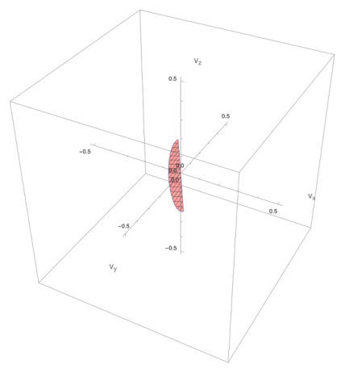
<figcaption class="paper-figure-caption"><b>Fig 1.</b> Figure 1: The indicatrices for the depolarizing dynamics without drift at base point x = (0.5, 0.3, 0.2) with Ct = 1 as boundaries of the surfaces shown. The four plots show how the indicatrix changes with respect to the control-cost-weights pγ, pγω, and pω.</figcaption>
</figure>
<figure class="paper-figure-card">
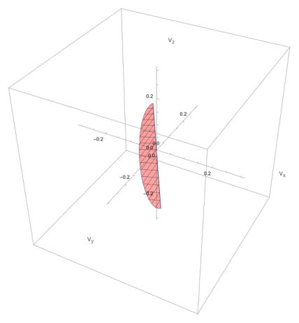
<figcaption class="paper-figure-caption"><b>Fig 2.</b> Figure 2: The indicatrices for the amplitude damping dynamics without drift at base point x = (0.5, 0.3, 0.2) with Ct = 1 as boundaries of the surfaces shown. The four plots show how the indicatrix changes with respect to the control-cost-weights pγ, pγω, and pω.</figcaption>
</figure>
<figure class="paper-figure-card">
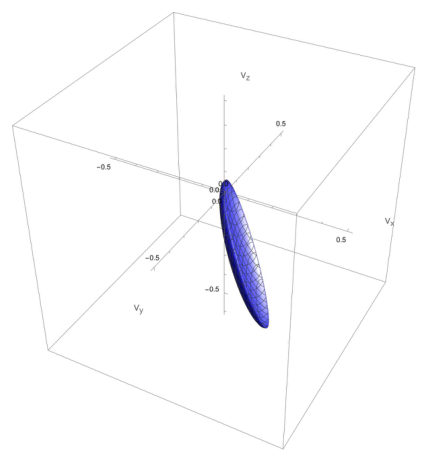
<figcaption class="paper-figure-caption"><b>Fig 3.</b> Figure 3: The indicatrices for the depolarizing dynamics with unitary drift at base point x = (0.5, 0.3, 0.2) with Ct = 1 and ∆= 1 as surfaces shown. The four plots show how the indicatrix changes with respect to the control-cost-weights pγ, pγω, and pω.</figcaption>
</figure>
<figure class="paper-figure-card">
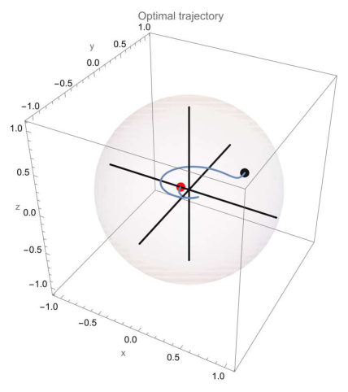
<figcaption class="paper-figure-caption"><b>Fig 4.</b> Figure 5: The optimal trajectories of the depolarizing with unitary drift computed numer- ically using the PMP approach with the initial point (black dot) at x = (0.9, 0.0, 0.0) and the final point (red dot) at x = (−0.1, 0.0, 0.0). The parameters are set to be Ct = 1 and ∆= 1. The four plots show how the trajectory changes with respect to the control-cost weights pγ, pγω, and pω.</figcaption>
</figure>
<figure class="paper-figure-card">
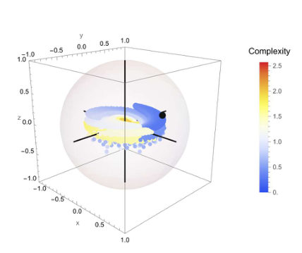
<figcaption class="paper-figure-caption"><b>Fig 5.</b> Figure 6: The trajectory costs gained from using the optimal trajectories for the depolar- izing with unitary drift from the initial point (black dot) x = (0.5, 0.3, 0.2) to final points reached by different initial velocities shown in color gradation. The parameters are set to be Ct = 1, ∆= 1 and two sets of control-cost weights.</figcaption>
</figure>
</div>

<p><strong>Summary.</strong> This paper extends the concept of quantum complexity from ideal closed systems to real-world open systems subject to dissipation. It reformulates complexity as an optimal control problem on the space of mixed states, revealing that the resulting geometry is sub-Finslerian rather than Riemannian. This provides a powerful geometric tool for quantifying information processing limits in noisy quantum devices.</p>
<p><strong>Why it may be interesting.</strong> This work directly addresses the quantification of complexity in realistic, dissipative quantum systems, which is a major frontier connecting quantum information theory with open quantum dynamics.</p>
<details>
<summary>Detailed structure</summary>
<p><strong>Main problem.</strong> The core problem is extending the geometric definition of quantum complexity, originally for closed systems, to open quantum systems governed by dissipation.</p>
<p><strong>Main result.</strong> The geometry in open systems is fundamentally sub-Finslerian rather than Riemannian due to irreversible dissipation, providing a new framework to quantify complexity in realistic noisy environments.</p>
<p><strong>Method.</strong> Complexity is defined via an optimal control problem on the space of mixed states, analyzed using tools from Finsler geometry and incorporating costs for both unitary and non-unitary generators.</p>
<p><strong>Model / system.</strong> The analysis uses open quantum systems described by density matrices evolving under the Lindblad equation. Specific models include a single qubit with depolarizing/amplitude-damping channels and the damped harmonic oscillator.</p>
<p><strong>Key observables.</strong> Complexity, flag curvature (Finslerian analog of sectional curvature), and non-reversibility of geodesics.</p>
<p><strong>Important parameters / regimes.</strong> Penalty factors in the cost functional; dissipation rates ($\Gamma$); Hamiltonian parameters ($H$).</p>
<p><strong>Assumptions / limitations.</strong> The dynamics are governed by the Lindblad equation (CPTP maps). The geometry is generally sub-Finslerian because the evolution is constrained by physical dissipation.</p>
<p><strong>Paper structure.</strong> The paper builds from the known unitary case to the open system generalization, deriving the necessary optimal control formulation and analyzing how dissipation modifies the underlying geometric structure (Riemannian $ o$ sub-Finslerian).</p>
</details>
<details>
<summary>Abstract</summary>
<p>We extend Nielsen's geometric approach for quantum complexity from closed to open quantum systems, whose dynamics is governed by Lindbladian evolution. In this framework, complexity is defined through an optimal-control problem on the space of mixed states, with a cost assigned to both unitary and non-unitary generators. We show that the resulting geometric structure differs fundamentally from the Riemannian geometry that emerges in the case of unitary evolution. In the open-system setting, the natural geometry is typically sub-Finslerian. Dissipation makes the geodesics non-reversible, while the admissible tangent directions are restricted by the physically allowed controls. We analyze several physically motivated examples, including a single qubit subject to depolarizing and amplitude-damping channels, as well as the damped harmonic oscillator. We show that, similarly to the unitary case, varying the penalty factors in the cost functional modifies the geometric properties through changes in the flag curvature, the Finslerian analog of sectional curvature. Our results provide a geometric framework for quantifying the abstract notion of complexity in dissipative quantum systems, with potential connections to experimentally realizable setups.</p>
</details>
<p><sub><a href="#top">↑ back to top</a></sub></p>

<p><a id="paper-2607.07829"></a></p>
<h3 id="thermodynamic-structure-and-composition-in-nonlinear-convection-diffusion"><a href="http://arxiv.org/abs/2607.07829v1">Thermodynamic Structure and Composition in Nonlinear Convection-Diffusion</a></h3>
<p><strong>Authors:</strong> J. J. Segura<br>
<strong>Type:</strong> theory · <strong>Category:</strong> statistical mechanics · <strong>PDF:</strong> <a href="https://arxiv.org/pdf/2607.07829v1">https://arxiv.org/pdf/2607.07829v1</a><br>
<strong>Analysis basis:</strong> full PDF text, analyzed in chunks
<strong>Topic relevance:</strong> <code>Keldysh / 2PI / non-Gaussian methods</code> <strong>3/5</strong> · <code>methods for driven-dissipative</code> <strong>3/5</strong> · <code>correlated / nonlocal dissipation</code> <strong>2/5</strong> · <code>driven-dissipative phase transition</code> <strong>2/5</strong> · <code>non-equilibrium dynamics</code> <strong>2/5</strong> · <code>non-equilibrium universality</code> <strong>2/5</strong> · <code>Kondo &amp; dissipative impurity</code> <strong>1/5</strong> · <code>analog quantum simulation</code> <strong>1/5</strong> · <code>entanglement &amp; information structure</code> <strong>1/5</strong> · <code>scars &amp; prethermalization</code> <strong>1/5</strong></p>
<div class="figure-strip-hint">↔ Scroll figures horizontally</div>
<div class="paper-figures-scroll">
<figure class="paper-figure-card">
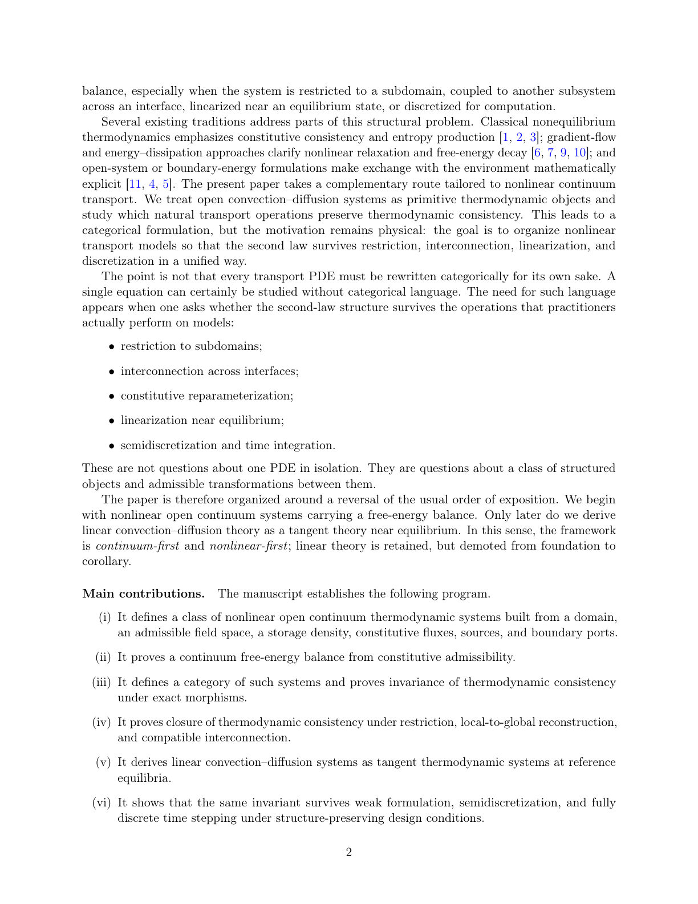
<figcaption class="paper-figure-caption"><b>Fig 1.</b> Low-resolution page preview, page 2</figcaption>
</figure>
<figure class="paper-figure-card">
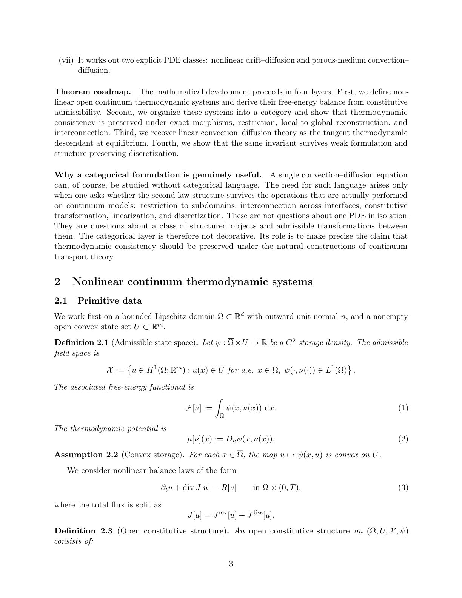
<figcaption class="paper-figure-caption"><b>Fig 2.</b> Low-resolution page preview, page 3</figcaption>
</figure>
<figure class="paper-figure-card">
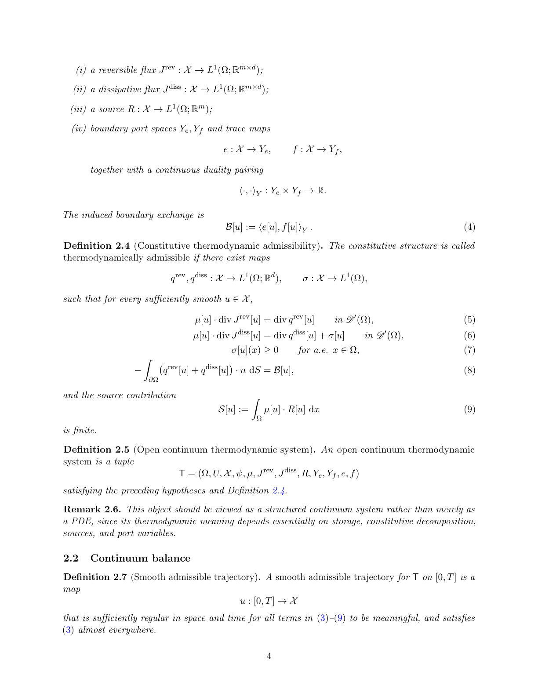
<figcaption class="paper-figure-caption"><b>Fig 3.</b> Low-resolution page preview, page 4</figcaption>
</figure>
<figure class="paper-figure-card">
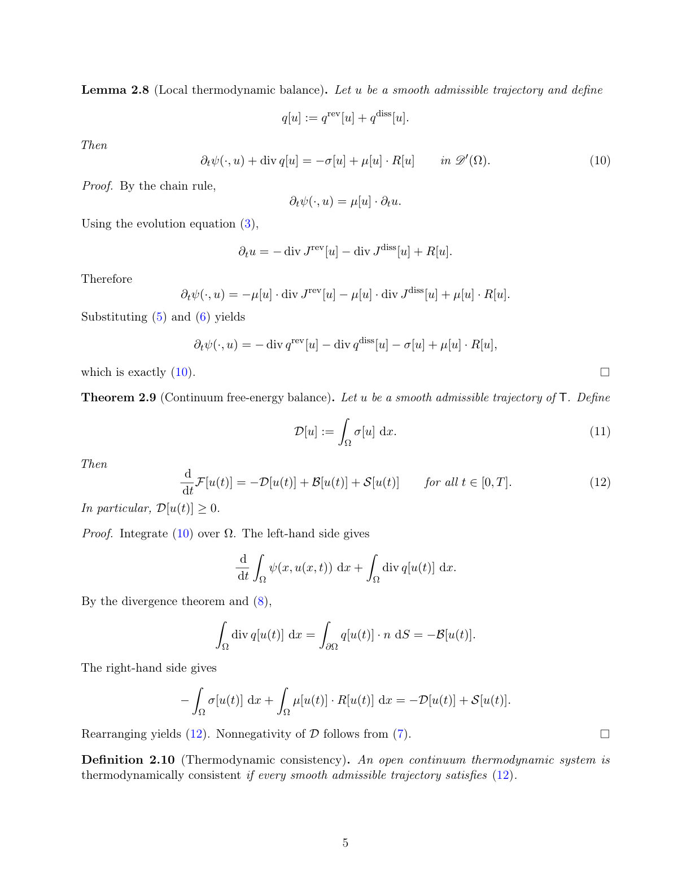
<figcaption class="paper-figure-caption"><b>Fig 4.</b> Low-resolution page preview, page 5</figcaption>
</figure>
<figure class="paper-figure-card">
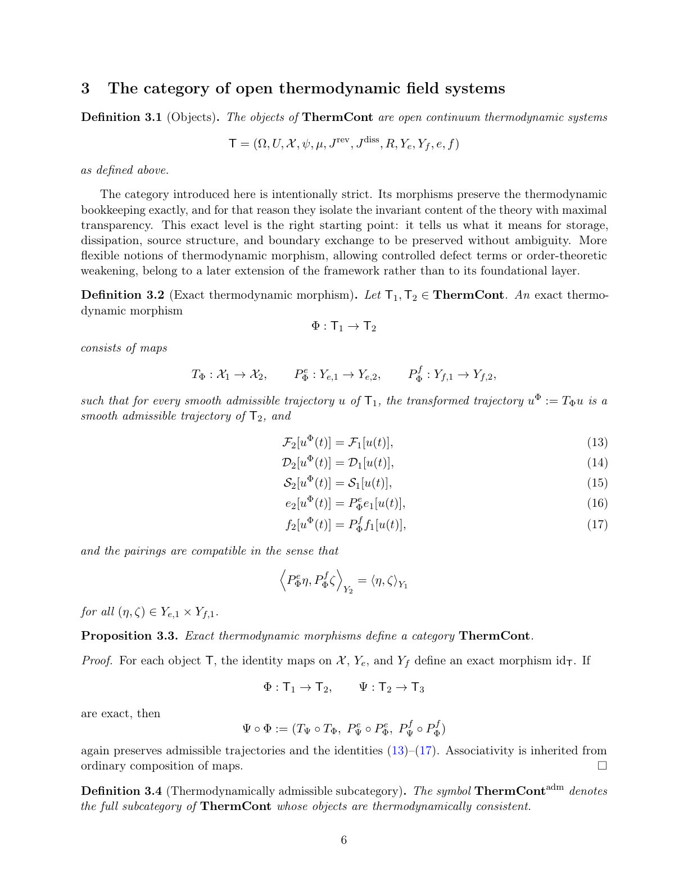
<figcaption class="paper-figure-caption"><b>Fig 5.</b> Low-resolution page preview, page 6</figcaption>
</figure>
</div>

<p><strong>Summary.</strong> This paper establishes a comprehensive framework to ensure that nonlinear convection-diffusion models rigorously obey the second law of thermodynamics. It achieves this by defining thermodynamic consistency as an invariant property preserved across continuum modeling, subsystem coupling, linearization, and numerical discretization. The work provides a powerful structural tool for building physically consistent computational models in transport physics.</p>
<p><strong>Why it may be interesting.</strong> While focused on classical transport, the rigorous mathematical machinery—especially the emphasis on structure preservation under approximation/decomposition—is highly relevant for developing consistent quantum field theories or open quantum system dynamics where approximations are unavoidable.</p>
<details>
<summary>Detailed structure</summary>
<p><strong>Main problem.</strong> Developing a rigorous mathematical framework for nonlinear convection-diffusion systems that guarantees the preservation of thermodynamic balance (the second law) across all modeling stages.</p>
<p><strong>Main result.</strong> The authors prove that the free-energy balance is invariant under key operations like restriction to subdomains, interface coupling, and numerical discretization schemes.</p>
<p><strong>Method.</strong> The work employs a continuum-first framework built on defining open constitutive structures using free-energy functionals and analyzing structural preservation via categorical methods.</p>
<p><strong>Model / system.</strong> Open nonlinear convection-diffusion systems governing transport phenomena (mass/heat transfer) in fluids or porous media, modeled around a free-energy balance equation.</p>
<p><strong>Key observables.</strong> Free energy functional ($F$), Dissipation term ($D \ge 0$), Boundary fluxes ($B$), and Source terms ($S$).</p>
<p><strong>Important parameters / regimes.</strong> The system state field ($
u$) and the constitutive flux decomposition ($J = J_{ ext{rev}} + J_{ ext{diss}}$).</p>
<p><strong>Assumptions / limitations.</strong> The existence of an admissible state field $\psi$ and the requirement that the thermodynamic balance must hold exactly across structural transformations.</p>
<p><strong>Figures summary.</strong> Not specified (Notes focus on theorems, definitions, and mathematical structures rather than figure content).</p>
<p><strong>Paper structure.</strong> The paper builds from defining the continuous free-energy balance (Theorem 2.9), extends this to local/global reconstruction via category theory (Theorems 3.5, 4.5, 4.13), and finally applies these structural invariants to ensure consistency across semidiscrete and fully discrete numerical schemes (Theorems 7.4, 7.7).</p>
</details>
<details>
<summary>Abstract</summary>
<p>Nonlinear convection--diffusion systems play a central role in transport phenomena, including mass transfer, heat transfer, porous-media transport, and coupled continuum processes with source, exchange, and interface effects. In such systems, the key question is often not only which governing partial differential equation is used, but whether the model preserves a consistent thermodynamic balance under the operations that arise naturally in transport analysis: restriction to subdomains, coupling across interfaces, linearization near equilibrium, and discretization for computation.   This paper develops a continuum-first framework for open nonlinear convection--diffusion systems in which thermodynamic consistency is formulated as a free-energy balance with nonnegative bulk dissipation and explicit boundary and source contributions. Within this setting, nonlinear transport systems are defined as structured objects built from admissible state fields, storage functionals, constitutive flux decompositions, sources, and boundary ports. We prove that the thermodynamic balance is preserved under exact structure-preserving transformations, restriction to subdomains, local-to-global reconstruction over compatible domain decompositions, and power-conserving interconnection of open subsystems. We then derive classical linear convection--diffusion models as tangent thermodynamic descendants at equilibrium and show that the same invariant survives weak formulation, semidiscretization, and fully discrete time stepping when the numerical design respects thermodynamic structure. Nonlinear drift--diffusion and porous-medium convection--diffusion are used as explicit examples. The resulting contribution is a compositional transport framework in which the second law remains visible across continuum modeling, subsystem coupling, linear approximation, and computation.</p>
</details>
<p><sub><a href="#top">↑ back to top</a></sub></p>

<p><a id="paper-2607.07942"></a></p>
<h3 id="a-hardware-efficient-variational-ansatz-with-an-exact-diagonal-metric-for-real-and-imaginary-time-evolution-and-haar-sampling"><a href="http://arxiv.org/abs/2607.07942v1">A hardware-efficient variational ansatz with an exact diagonal metric for real- and imaginary-time evolution and Haar sampling</a></h3>
<p><strong>Authors:</strong> Dario Picozzi<br>
<strong>Type:</strong> theory · <strong>Category:</strong> strongly correlated electrons · <strong>PDF:</strong> <a href="https://arxiv.org/pdf/2607.07942v1">https://arxiv.org/pdf/2607.07942v1</a><br>
<strong>Analysis basis:</strong> full PDF text, analyzed in chunks
<strong>Topic relevance:</strong> <code>analog quantum simulation</code> <strong>3/5</strong> · <code>methods for driven-dissipative</code> <strong>3/5</strong> · <code>non-equilibrium dynamics</code> <strong>3/5</strong> · <code>Keldysh / 2PI / non-Gaussian methods</code> <strong>2/5</strong> · <code>entanglement &amp; information structure</code> <strong>2/5</strong> · <code>correlated / nonlocal dissipation</code> <strong>1/5</strong> · <code>correlated cavity matter</code> <strong>1/5</strong> · <code>driven-dissipative phase transition</code> <strong>1/5</strong> · <code>non-equilibrium universality</code> <strong>1/5</strong></p>
<div class="figure-strip-hint">↔ Scroll figures horizontally</div>
<div class="paper-figures-scroll">
<figure class="paper-figure-card">
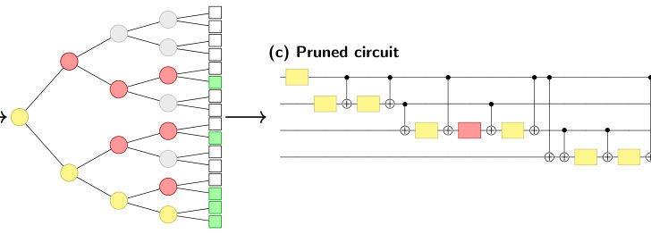
<figcaption class="paper-figure-caption"><b>Fig 1.</b> FIG. 1: End-to-end pipeline, illustrated on n = 4 qubits with k = |S| = 5 active basis states, S = {0000, 0001, 0010, 0110, 1010}. From the user-supplied active leaves (a) (green nodes in the tree), the compiler builds the binary tree and classifies each internal node as Active (yellow, free Ry angle), Fixed (red, Ry angle pinned to 0 or 1 in units of π/2) or Inactive (grey, gauge direction that does not affect the represented state) (b). Gauge-fixing the inactive parameters eliminates redundant elementary Ry gates in the cascade and exposes pairwise CNOT cancellations, yielding the pruned circuit (c) (shown stylised; coloured boxes mark Active/Fixed elementary Ry rotations in the same...</figcaption>
</figure>
<figure class="paper-figure-card">
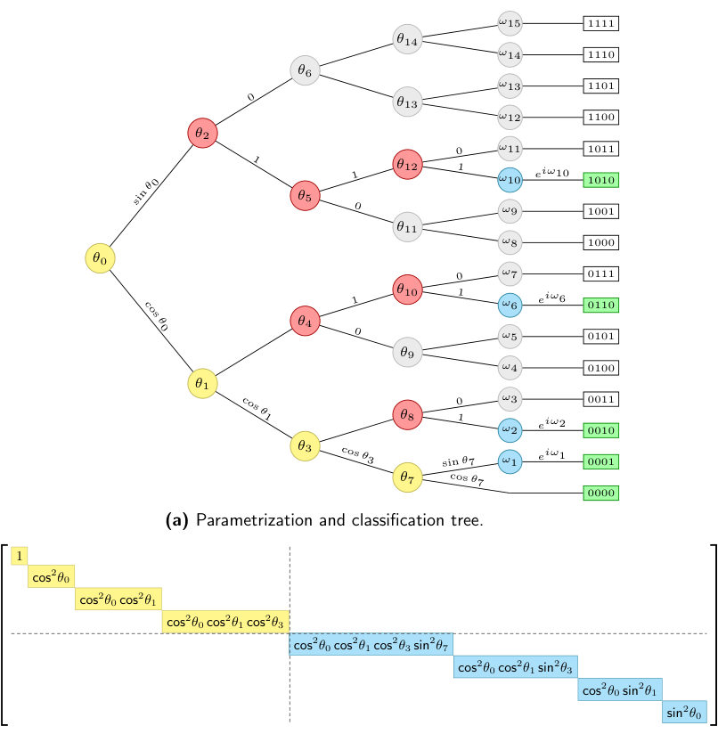
<figcaption class="paper-figure-caption"><b>Fig 2.</b> FIG. 2: Parametrization, classification, and the resulting diagonal metric for n = 4 and S = {0000, 0001, 0010, 0110, 1010}. (a) Each internal node carries one Ry parameter θi; each final-layer node carries one Rz parameter ωj, contributing the phase eiωj on its outgoing edge. Branch factors follow the convention of Sec. I A (cos θi on downward, sin θi on upward branches), labelled here along the leftmost path; the redundant global-phase coordinate ω0 is gauge-fixed to zero and drawn as a direct edge from θ7 to |0000⟩(no phase node). The metric weights wi and leaf probabilities pj are the squared path products of Sec. I B. Node colours follow the classification of Sec. I F: Active (yellow,...</figcaption>
</figure>
<figure class="paper-figure-card">
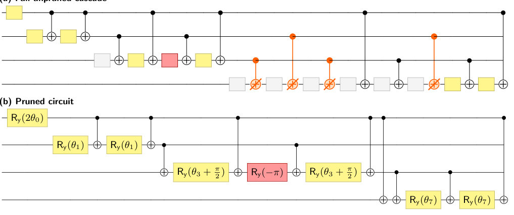
<figcaption class="paper-figure-caption"><b>Fig 3.</b> FIG. 3: End-to-end pruning walkthrough (Algorithm 1) for the running example n = 4, S = {0000, 0001, 0010, 0110, 1010}, with classified tree shown in Fig. 2. Classes: Active = {θ0, θ1, θ3, θ7} (4 free), Fixed = {θ2=0, θ4=1, θ5=1, θ8=0, θ10=0, θ12=0}, Inactive = {θ6, θ9, θ11, θ13, θ14}. (a) The full unpruned triangular circuit (15 Ry + 14 CNOT); each elementary Ry is coloured by the class of the tree parameter it serves – yellow = kept (active), red = kept as a constant ±π/2 or ±π (fixed), faded grey = removed by pruning – and the two bracketing-empty CNOT pairs that cancel after Ry removal are highlighted in orange. Block boundaries (left to right): position 0 the cascade on q3, positions...</figcaption>
</figure>
<figure class="paper-figure-card">
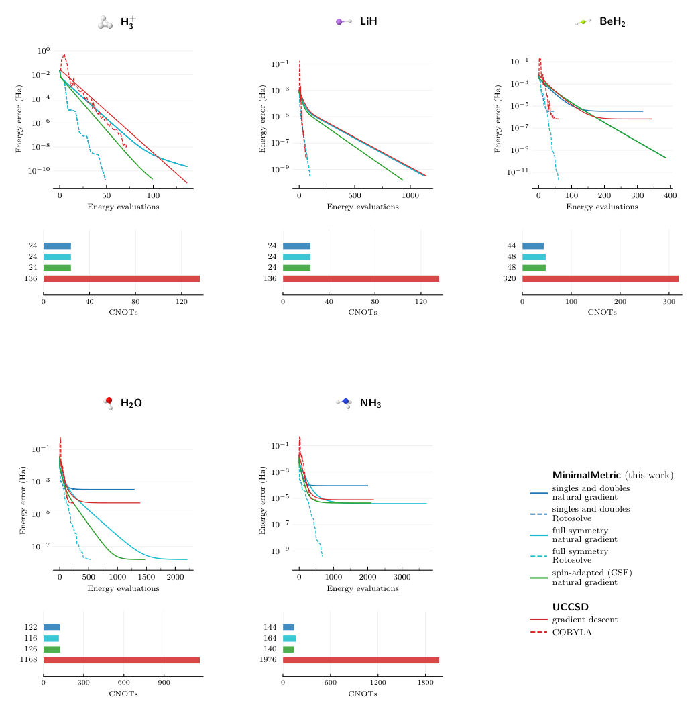
<figcaption class="paper-figure-caption"><b>Fig 4.</b> FIG. 4: Symmetry-adapted VQE benchmark in the STO-3G basis. Convergence at equilibrium geometry for five molecules: absolute energy error |E −Eref| versus the cumulative number of energy evaluations on a log scale, with Eref the CASCI (or FCI) reference. All curves share the same point-group-screened singles-and-doubles (S+D) parameter set unless noted. For MinimalMetric (MM, the symmetry-adapted pruned ansatz) two optimizers are compared on the identical ansatz, exact natural gradient (NG) and derivative-free Rotosolve, which reach the same S+D variational floor, confirming the residual error is the S+D truncation rather than an optimizer artefact; lifting MM to the full symmetry sector...</figcaption>
</figure>
<figure class="paper-figure-card">
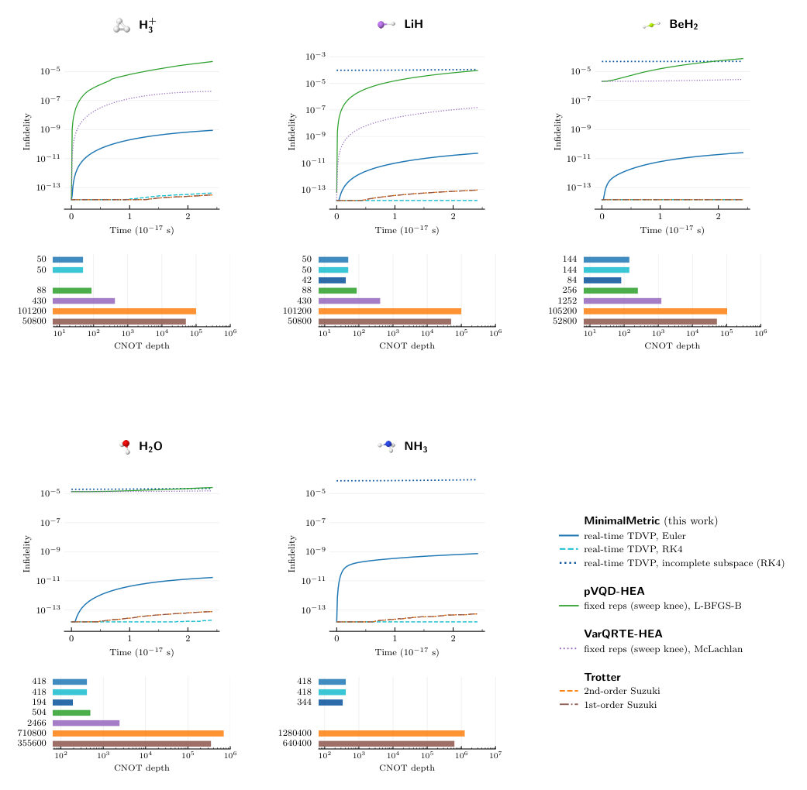
<figcaption class="paper-figure-caption"><b>Fig 5.</b> FIG. 5: Real-time molecular dipole-kick trajectories for H+ 3 , LiH, BeH2, H2O and NH3 at equilibrium geometry (κ = 0.05, T = 1; Euler and RK4 integrators). Each panel shows the trajectory infidelity against exact evolution on a log scale (top) over the coherent CNOT depth of each method (strip beneath, log scale). MinimalMetric (blue) tracks the exact trajectory to numerical precision; second-order Trotter (orange, dashed) is numerically exact; pVQD-HEA (green) and VarQRTE-HEA (purple), with per-molecule repetition count fixed at the knee of a dedicated sweep and the multistart L-BFGS state-preparation floor charged, plateau at ∼10−4–10−7 infidelity, orders of magnitude above...</figcaption>
</figure>
</div>

<p><strong>Summary.</strong> This paper presents a novel, hardware-efficient ansatz for variational quantum algorithms whose geometric metric is provably diagonal. This breakthrough eliminates the need for costly auxiliary measurements when calculating natural gradients or performing time evolution in quantum simulations. It achieves state-of-the-art performance on molecular and Hubbard models with significantly fewer gates than existing leading methods.</p>
<p><strong>Why it may be interesting.</strong> For AMO physicists working on open quantum systems or many-body dynamics, this provides a highly efficient, geometrically sound framework to implement variational methods (like VQE) that can handle complex Hamiltonians while maintaining rigorous control over optimization landscapes and computational cost.</p>
<details>
<summary>Detailed structure</summary>
<p><strong>Main problem.</strong> The primary challenge addressed is overcoming the computational overhead associated with calculating the Fubini-Study metric for variational quantum algorithms used in time evolution and optimization.</p>
<p><strong>Main result.</strong> The authors introduce a hardware-efficient ansatz whose Fubini-Study pullback metric is diagonal in closed form, enabling natural gradient calculations and time evolution without costly auxiliary measurements or matrix inversions.</p>
<p><strong>Method.</strong> They utilize a binary tree parameterization for the quantum state, deriving an exact, diagonal expression for the metric tensor that simplifies complex geometric computations into simple weight/probability tracking.</p>
<p><strong>Model / system.</strong> The method is applied to simulating electronic structure calculations for small molecules and Hubbard quench dynamics. The ansatz is designed to be spin-adapted and applicable to general quantum many-body problems.</p>
<p><strong>Key observables.</strong> Fubini-Study metric, two-qubit gate count, natural gradient signal magnitude, leakage $L(\phi)$, and energy expectation values ($E$).</p>
<p><strong>Important parameters / regimes.</strong> The number of qubits ($n$), the dimension of the active subspace ($k$), and the required accuracy (reference-level).</p>
<p><strong>Assumptions / limitations.</strong> The method assumes the target state is supported on a low-dimensional subspace $k \ll 2^n$ to enable parameter pruning; it also relies on the existence of structured dressings for quantum advantage.</p>
<p><strong>Figures summary.</strong> Figures illustrate the end-to-end pipeline, showing how the binary tree structure classifies parameters and leads to a pruned circuit whose complexity scales favorably with the active subspace size $k$.</p>
<p><strong>Paper structure.</strong> The paper builds from identifying the metric bottleneck in VQAs, proposing the diagonal ansatz structure via tree parameterization, deriving the closed-form metric for time evolution/gradient calculation, demonstrating pruning efficiency, and finally validating its use on molecular and Hubbard dynamics simulations.</p>
</details>
<details>
<summary>Abstract</summary>
<p>Variational quantum algorithms depend on the geometry of their parametrised circuits: metric-aware optimisation and time evolution require the Fubini-Study metric, which has hitherto demanded costly auxiliary measurements and ill-conditioned inversions. This work introduces a hardware-efficient $n$-qubit ansatz, which parametrises states by a binary tree and whose Fubini-Study pullback metric is diagonal in closed form. Quantum natural gradient on the tree parameters, variational imaginary- and real-time evolution, and exact unitary-invariant (Haar) sampling on a symmetry sector run with no auxiliary metric circuits or matrix inversion. When the target state is supported on a subspace of $k$ computational-basis states, the redundant tree parameters carry a gauge freedom a pruning compiler converts into circuits whose two-qubit count provably grows linearly in $k$; a variant reaches near-optimal $O(nk/\log n)$ scaling with the closed-form metric intact. On electronic-structure calculations for small molecules and half-filled Hubbard quench dynamics, the method reaches reference-level accuracy with one to three orders of magnitude fewer two-qubit gates than leading alternatives. Interchangeable constructions (a Schur-transform dressing or internal reparameterisations) make the ansatz exactly spin-adapted, with fixed total spin at every parameter and no penalty terms. The bare ansatz is an exactly controllable, well-conditioned and barren-plateau-free primitive for preparing and sampling sector states: on its own, it is classically simulable in $k$ (a boundary proved for a general class of sector-sparse ansätze); composed with a classically hard dressing, it yields molecular ground states, sector-Haar benchmarking, thermal correlators, and exact effective Hamiltonians trained from energy measurements alone, with the composed circuit carrying the potential for quantum advantage.</p>
</details>
<p><sub><a href="#top">↑ back to top</a></sub></p>

<p><a id="paper-2607.07948"></a></p>
<h3 id="tunable-emergent-gauge-fields-from-skyrmions-in-a-quasicrystalline-lattice"><a href="http://arxiv.org/abs/2607.07948v1">Tunable Emergent Gauge Fields from Skyrmions in a Quasicrystalline Lattice</a></h3>
<p><strong>Authors:</strong> Leandro M. Chinellato, Flavia A. Gómez Albarracín, Cristian D. Batista, Pablo S. Cornaglia<br>
<strong>Type:</strong> theory · <strong>Category:</strong> other · <strong>PDF:</strong> <a href="https://arxiv.org/pdf/2607.07948v1">https://arxiv.org/pdf/2607.07948v1</a><br>
<strong>Analysis basis:</strong> full PDF text, analyzed in chunks
<strong>Topic relevance:</strong> <code>analog quantum simulation</code> <strong>3/5</strong> · <code>exotic spin models in light-matter</code> <strong>3/5</strong> · <code>spintronics-quantum-optics interface</code> <strong>3/5</strong> · <code>driven-dissipative phase transition</code> <strong>2/5</strong> · <code>non-equilibrium dynamics</code> <strong>2/5</strong> · <code>Frenkel-Kontorova</code> <strong>1/5</strong> · <code>Keldysh / 2PI / non-Gaussian methods</code> <strong>1/5</strong> · <code>methods for driven-dissipative</code> <strong>1/5</strong> · <code>non-equilibrium universality</code> <strong>1/5</strong></p>
<div class="figure-strip-hint">↔ Scroll figures horizontally</div>
<div class="paper-figures-scroll">
<figure class="paper-figure-card">
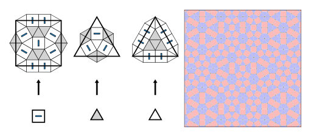
<figcaption class="paper-figure-caption"><b>Fig 1.</b> FIG. 1. Inflation rules used to generate the quasicrystalline structure [23]. The right panel shows a fragment of the qua- sicrystalline lattice.</figcaption>
</figure>
<figure class="paper-figure-card">
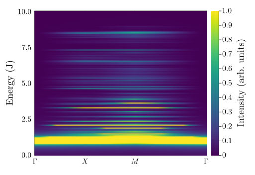
<figcaption class="paper-figure-caption"><b>Fig 2.</b> FIG. 2. Dynamical spin structure factor in the fully polarized phase, computed within LSWT using the kernel polynomial method (KPM) as implemented in Sunny.jl (v0.9) [24, 25]. The reciprocal-space path follows the Brillouin zone of the square supercell associated with the N = 2911-site approxi- mant under periodic boundary conditions.</figcaption>
</figure>
<figure class="paper-figure-card">
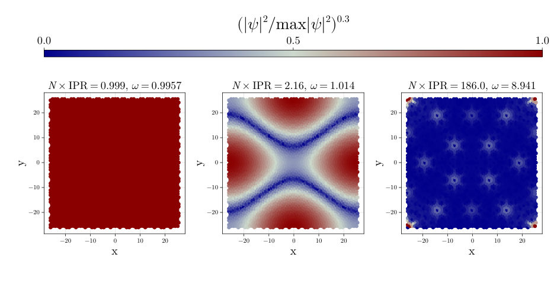
<figcaption class="paper-figure-caption"><b>Fig 3.</b> FIG. 3. Squared probability amplitude |⟨i|ψn⟩|2 for representative magnon eigenstates of the quasicrystal approximant at the critical magnetic field H = Hc. The amplitudes are displayed using the power-law color scale (|ψ|2/ max |ψ|2)0.3 to enhance the visibility of low-intensity features. Each panel is labeled by the eigenstate energy ω and the scaled participation ratio N ×IPR.</figcaption>
</figure>
<figure class="paper-figure-card">
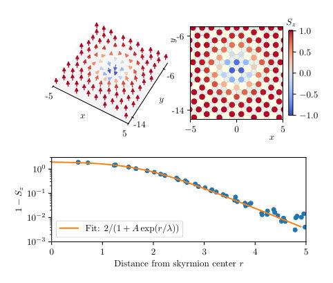
<figcaption class="paper-figure-caption"><b>Fig 4.</b> FIG. 4. Single skyrmion on the quasicrystalline lattice at magnetic field H = 0.994. The upper left panel shows the spin texture, with arrows indicating the magnetic moments and colors representing the out-of-plane magnetization component Sz. The lower panel shows shows the decay of the polarization disturbance,(1−Sz(r)), induced by the skyrmion as a function of the distance from its center. The solid line is fit to 1 − Sz(r) = 2 1+Aer/λ with parameters A = 0.0337, λ = 0.513.</figcaption>
</figure>
<figure class="paper-figure-card">
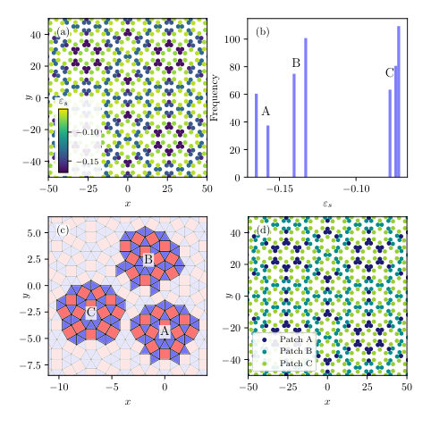
<figcaption class="paper-figure-caption"><b>Fig 5.</b> FIG. 5. (a) Single skyrmion energy as a function of the posi- tion for the fixed-spin boundary conditions patch at magnetic field H = 0.994 . (b) Histogram of single skyrmion energy. The three labeled peaks correspond to skyrmions located at the center of the patches shown in (c). (d) Locations of the A, B, and C patches, including their rotationally equivalent realizations within the quasicrystal.</figcaption>
</figure>
</div>

<p><strong>Summary.</strong> This work explores how magnetic skyrmions confined to a quasicrystalline lattice create an emergent, field-tunable gauge field. The unique quasiperiodic pinning landscape allows the skyrmion density—and thus the topological Hall conductivity—to be smoothly controlled by small changes in the external magnetic field. This suggests quasicrystals are promising platforms for advanced magnetoelectronic devices.</p>
<p><strong>Why it may be interesting.</strong> The concept of emergent gauge fields controlled by topological textures (skyrmions) in a geometrically constrained system like a quasicrystal is highly relevant to understanding tunable electronic properties in novel magnetic materials.</p>
<details>
<summary>Detailed structure</summary>
<p><strong>Main problem.</strong> The study investigates how magnetic skyrmions on a quasicrystalline lattice generate tunable emergent gauge fields, which can control the electronic Hall conductivity.</p>
<p><strong>Main result.</strong> The quasiperiodic pinning landscape allows for a smooth, field-controlled suppression of skyrmion density near saturation, enabling continuous tuning of the topological Hall response to zero.</p>
<p><strong>Method.</strong> Theoretical modeling using classical Heisenberg spin dynamics combined with linear spin-wave theory and effective particle models.</p>
<p><strong>Model / system.</strong> The system is magnetic skyrmions governed by a classical Heisenberg model incorporating Dzyaloshinskii-Moriya interactions on a 2D quasicrystalline lattice structure.</p>
<p><strong>Key observables.</strong> Hall conductivity ($\sigma_{xy}$), skyrmion density, magnon eigenstate localization (IPR), and topological charge ($Q$).</p>
<p><strong>Important parameters / regimes.</strong> External magnetic field ($H$), Dzyaloshinskii-Moriya coupling strength ($D$), and the lattice structure itself.</p>
<p><strong>Assumptions / limitations.</strong> The analysis often treats skyrmions as point-like particles confined to metastable pinning centers, and approximations like LSWT are employed.</p>
<p><strong>Figures summary.</strong> Figures illustrate $\sigma_{xy}$ vs $H$ showing continuous tunability near saturation; IPR plots characterize magnon eigenstate localization (extended vs. critical); energy histograms show distinct skyrmion energy sectors.</p>
<p><strong>Paper structure.</strong> The paper progresses from defining the Hamiltonian on the quasicrystal, analyzing the resulting magnon spectrum and state localization via LSWT/IPR, to deriving an effective model for skyrmion interactions, and finally calculating the field-dependent Hall conductivity ($\sigma_{xy}$).</p>
</details>
<details>
<summary>Abstract</summary>
<p>We study magnetic skyrmions in a two-dimensional quasicrystalline lattice using a classical Heisenberg model with Dzyaloshinskii-Moriya interactions and an external magnetic field. The competition between the skyrmion-skyrmion repulsion and an emergent quasiperiodic pinning landscape gives rise to a sequence of distinct skyrmion lattice configurations as a function of field. The resulting hierarchy of quasiperiodic pinning potentials, characterized by closely spaced quasi-degenerate minima, enables a quasi-continuous suppression of the skyrmion density as the saturation field is approached, in sharp contrast to the strongly first-order collapse of skyrmion crystals on periodic lattices. This provides a direct mechanism for controlling the topological charge and, consequently, the emergent gauge field for itinerant electrons. As a consequence, the Hall conductivity can be strongly modified with small changes in the magnetic field and driven smoothly to zero near saturation. This field-controlled tunability, rooted in the underlying multistability, identifies quasicrystalline magnets as a platform for tunable topological textures, with potential applications in magnetic memory and magnetoelectronic response.</p>
</details>
<p><sub><a href="#top">↑ back to top</a></sub></p>

<p><a id="paper-2607.07868"></a></p>
<h3 id="lecture-notes-on-random-matrix-theory-the-results-the-applications-and-the-analytical-tools"><a href="http://arxiv.org/abs/2607.07868v1">Lecture notes on random matrix theory: the results, the applications, and the analytical tools</a></h3>
<p><strong>Authors:</strong> Joseph W. Baron<br>
<strong>Type:</strong> theory · <strong>Category:</strong> disordered systems and neural networks · <strong>PDF:</strong> <a href="https://arxiv.org/pdf/2607.07868v1">https://arxiv.org/pdf/2607.07868v1</a><br>
<strong>Analysis basis:</strong> full PDF text, analyzed in chunks
<strong>Topic relevance:</strong> <code>Keldysh / 2PI / non-Gaussian methods</code> <strong>3/5</strong> · <code>methods for driven-dissipative</code> <strong>3/5</strong> · <code>analog quantum simulation</code> <strong>2/5</strong> · <code>non-equilibrium dynamics</code> <strong>2/5</strong> · <code>correlated / nonlocal dissipation</code> <strong>1/5</strong> · <code>correlated cavity matter</code> <strong>1/5</strong> · <code>driven-dissipative phase transition</code> <strong>1/5</strong> · <code>entanglement &amp; information structure</code> <strong>1/5</strong> · <code>non-equilibrium universality</code> <strong>1/5</strong></p>
<div class="figure-strip-hint">↔ Scroll figures horizontally</div>
<div class="paper-figures-scroll">
<figure class="paper-figure-card">
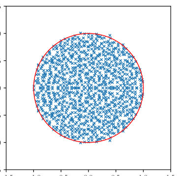
<figcaption class="paper-figure-caption"><b>Fig 1.</b> FIG. 1: The eigenvalues of a square matrix of size N = 1000 whose elements are all independent</figcaption>
</figure>
<figure class="paper-figure-card">

<figcaption class="paper-figure-caption"><b>Fig 2.</b> FIG. 2: A (vastly incomplete) timeline of random matrix theory.</figcaption>
</figure>
<figure class="paper-figure-card">

<figcaption class="paper-figure-caption"><b>Fig 3.</b> FIG. 3: Histograms of the eigenvalues for a single symmetric Gaussian random matrix with</figcaption>
</figure>
<figure class="paper-figure-card">

<figcaption class="paper-figure-caption"><b>Fig 4.</b> FIG. 4: Comparison of Im[G(z)] for a single realisation of the random matrix for N = 50</figcaption>
</figure>
<figure class="paper-figure-card">

<figcaption class="paper-figure-caption"><b>Fig 5.</b> FIG. 5: Universality of the semicircle law. As long as the elements Jij have the statistics in</figcaption>
</figure>
</div>

<p><strong>Summary.</strong> This lecture notes guide provides a comprehensive overview of Random Matrix Theory (RMT), detailing how its core results are derived using both elementary and advanced mathematical tools. It establishes RMT as a powerful framework for predicting spectral statistics across diverse fields, including condensed matter physics and finance. The work is valuable for practitioners needing to master the analytical techniques required for disordered systems research.</p>
<p><strong>Why it may be interesting.</strong> While focused on random matrices, the techniques (e.g., spectral analysis, localization theory) are highly relevant to understanding energy spectra in disordered quantum systems or analyzing noise/fluctuations in open quantum systems.</p>
<details>
<summary>Detailed structure</summary>
<p><strong>Main problem.</strong> The primary goal is determining the statistical properties of eigenvalues and eigenvectors for large random matrices without direct calculation.</p>
<p><strong>Main result.</strong> Classic results, such as Wigner's semicircle law for eigenvalue density, are derived using various advanced analytical techniques.</p>
<p><strong>Method.</strong> The paper details pedagogical derivations using the cavity method, followed by introducing advanced formalisms like diagrammatic, replica, path-integral, and supersymmetric methods.</p>
<p><strong>Model / system.</strong> The analysis focuses on large square random matrices (e.g., Gaussian Orthogonal Ensemble) whose entries are independent random variables scaled by $1/N$. Applications span nuclear physics, finance, spin glasses, and quantum chaos.</p>
<p><strong>Key observables.</strong> Eigenvalue density $
ho(\omega)$, eigenvalue spacing distributions, and spectral correlations.</p>
<p><strong>Important parameters / regimes.</strong> The system size $N$ is taken to infinity ($N 	o \infty$), and the analysis often involves taking limits in the complex plane ($\epsilon 	o 0$).</p>
<p><strong>Assumptions / limitations.</strong> The core assumption is that ensemble averages are sufficient, and for spectral density extraction, the variance of matrix entries must scale as $1/N$.</p>
<p><strong>Figures summary.</strong> Figures illustrate the convergence of eigenvalue histograms (for large N) towards a limiting distribution, such as the Wigner semicircle law.</p>
<p><strong>Paper structure.</strong> The notes suggest a two-part structure: first, pedagogical derivation of classic results using simple methods; second, an advanced reference guide introducing and comparing complex analytical tools like replica and path-integral formalisms.</p>
</details>
<details>
<summary>Abstract</summary>
<p>Random matrix theory has established itself as a theoretical cornerstone of the mathematical sciences over the past century. It has undeniable utility in areas of research as diverse as nuclear physics, finance, ecology and disordered systems. The purpose of these notes is twofold. First, the most famous and widely used classic results are derived in a pedagogical manner, mostly using the comparatively elementary and transparent cavity method. The significance of each result is then demonstrated in the context of a particular application. There are also some select exercises at the end of each section. In the second part of these notes, a reference guide of analytical techniques for the random-matrix/disordered-systems practitioner is provided. Introducing the diagrammatic, replica, path-integral, and supersymmetric formalisms from first principles, we rederive some of the aforementioned classic results, particularly focussing on the simplest one -- the semicircle law. Innovations such as the population dynamics method and the tools of free probability theory are also included. We discuss the merits of each analytical approach, and we highlight the contexts in which each becomes particularly useful.</p>
</details>
<p><sub><a href="#top">↑ back to top</a></sub></p>

<p><a id="paper-2607.08345"></a></p>
<h3 id="rotation-sensing-via-josephson-frequency-splitting-in-a-toroidal-superfluid"><a href="http://arxiv.org/abs/2607.08345v1">Rotation Sensing via Josephson-frequency Splitting in a Toroidal Superfluid</a></h3>
<p><strong>Authors:</strong> Giulio Nesti, Luca Pezzè<br>
<strong>Type:</strong> theory · <strong>Category:</strong> quantum gases · <strong>PDF:</strong> <a href="https://arxiv.org/pdf/2607.08345v1">https://arxiv.org/pdf/2607.08345v1</a><br>
<strong>Analysis basis:</strong> full PDF text, analyzed in chunks
<strong>Topic relevance:</strong> <code>Keldysh / 2PI / non-Gaussian methods</code> <strong>3/5</strong> · <code>analog quantum simulation</code> <strong>3/5</strong> · <code>driven-dissipative phase transition</code> <strong>2/5</strong> · <code>methods for driven-dissipative</code> <strong>2/5</strong> · <code>non-equilibrium dynamics</code> <strong>2/5</strong> · <code>Frenkel-Kontorova</code> <strong>1/5</strong> · <code>correlated cavity matter</code> <strong>1/5</strong> · <code>non-equilibrium universality</code> <strong>1/5</strong></p>
<div class="figure-strip-hint">↔ Scroll figures horizontally</div>
<div class="paper-figures-scroll">
<figure class="paper-figure-card">

<figcaption class="paper-figure-caption"><b>Fig 1.</b> FIG. 1. (a) Schematic of a toroidal superfluid interrupted by n = 4 tunneling barriers (black rectangles) and rotating at angular frequency Ω. (b) Due to the Doppler shift, a monochromatic (at Ω= 0) Josephson mode is split in two frequency modes ω±k(Ω) [blue and red lines corresponding schematically to blue and red arrows in panel (a)]. The splitting ω+k(Ω) −ω−k(Ω) = 2δωk(Ω) is proportional to Ωand the number of barriers n.</figcaption>
</figure>
<figure class="paper-figure-card">

<figcaption class="paper-figure-caption"><b>Fig 2.</b> FIG. 2. Josephson oscillations from GPE simulations. (a) Azimuthal density profile as a function of the angle θ along the ring and of time, for Ω= 0 (top) and Ω= 2π rad/sec (bottom). The leftmost sketches show the initial population imbalance, δNj,k(0) for k = π/2. The color scale is the rescaled density around the equilibrium value (see Appendix for definition). (b) Corresponding population oscillations for lattice sites 1 and 2, normalized to the initial imbalance δN. In panels (a) and (b), time is rescaled by τk = 2π/ωk(0), with k = π/2. (c,d) Rotation-induced frequency splitting δωk(Ω) as a function of the quasi-momentum k. (e,f) Josephson frequency ωk(0) as a function of k. Left...</figcaption>
</figure>
<figure class="paper-figure-card">

<figcaption class="paper-figure-caption"><b>Fig 3.</b> FIG. 3. (a) Oscillation frequencies ω+k(Ω) (blue dots) and ω−k(Ω) (red), normalized to ωk(0), as a function of the rotation frequency Ω, for n = 4. Results are obtained from GPE simulations; dashed lines are guides to the eye. The shaded regions indicate the Fourier width of the peaks at ω±k(Ω). (b) Josephson frequency ωk(0) at Ω= 0 as a function of the number of lattice sites n. Here ωk(0) is normalized to the value at n = 4. (c) Dimensionless coefficient α = 1</figcaption>
</figure>
<figure class="paper-figure-card">

<figcaption class="paper-figure-caption"><b>Fig 4.</b> FIG. 4. Sensitivity to rotations obtained from fits of GPE oscillations. (a) Fit uncertainty ∆δωk as a function of the dimensionless damping parameter Γ, defined in the Appendix. The comparison between the different n is done at fixed Teff. Different symbols correspond to dif- ferent numbers of lattice sites n; solid lines are guides to the eye. (b,c) Damped population oscillations for n = 4 (b) and n = 16 (c), computed for Γ = 5 × 10−3. In both panels, time is rescaled by τk = 2π/ωk(0), with ωk(0) evaluated for the n = 4 case. Although the damping rate increases with n, the Josephson frequency also in- creases, allowing for a more accurate determination of δωk from the fit, as shown in...</figcaption>
</figure>
</div>

<p><strong>Summary.</strong> The authors demonstrate that a toroidal superfluid containing multiple Josephson junctions can function as a highly sensitive gyroscope. Rotation causes a measurable splitting in the natural oscillation frequencies, providing a direct signal proportional to $\Omega$. This method offers superior sensitivity scaling ($\Delta\Omega \sim n^{-3/2}$) compared to standard measurements.</p>
<p><strong>Why it may be interesting.</strong> This work directly applies advanced many-body physics techniques (linearization of GPE) to create a novel quantum sensor concept, bridging fundamental superfluid dynamics with metrology.</p>
<details>
<summary>Detailed structure</summary>
<p><strong>Main problem.</strong> Developing a compact, scalable rotation sensor using superfluid dynamics.</p>
<p><strong>Main result.</strong> Rotation lifts the degeneracy of Josephson modes, creating a frequency splitting that grows linearly with both the rotation rate ($\Omega$) and the number of barriers ($n$), leading to an estimation uncertainty scaling as $\Delta\Omega \sim n^{-3/2}$.</p>
<p><strong>Method.</strong> Analytical derivation of normal mode spectra via linearization around equilibrium, confirmed by full numerical simulations.</p>
<p><strong>Model / system.</strong> The system is a toroidal superfluid (BEC) interrupted by $n$ tunneling barriers. Dynamics are modeled using the Gross-Pitaevskii equation in the rotating frame.</p>
<p><strong>Key observables.</strong> Josephson-mode spectrum, frequency splitting ($\delta\omega_k(\Omega)$), and two-frequency beatings.</p>
<p><strong>Important parameters / regimes.</strong> Rotation frequency ($\Omega$), number of barriers ($n$), tunneling coefficient ($J$), interaction strength ($U$).</p>
<p><strong>Assumptions / limitations.</strong> The analysis focuses on the small-amplitude oscillation regime; nearest-neighbor contributions are kept in the derivation.</p>
<p><strong>Figures summary.</strong> Figures illustrate the schematic setup, the Doppler splitting effect, and time evolution of density profiles showing both monochromatic ($\Omega=0$) and beating ($\Omega
eq 0$) oscillations.</p>
<p><strong>Paper structure.</strong> The paper progresses from establishing the physical model (GPE in a ring) to deriving the normal mode spectrum analytically. It then uses this framework to show how rotation lifts degeneracies, leading to measurable frequency splittings that scale favorably with $n$.</p>
</details>
<details>
<summary>Abstract</summary>
<p>We show that a toroidal superfluid interrupted by $n$ tunneling barriers realizes a compact Josephson gyroscope with an $n$-enhanced response to rotation. In the small-amplitude regime, we derive analytically the normal mode spectrum of the coupled population-phase oscillations. In the absence of rotation, pairs of modes are degenerate: a finite angular velocity $Ω$ lifts this degeneracy through a Doppler shift, producing a frequency splitting that grows linearly with both $Ω$ and $n$. Full numerical simulations confirm this prediction and reveal long-lived two-frequency beatings, in sharp contrast with the monochromatic Josephson oscillations of the nonrotating system. These beatings provide a direct rotation signal with estimation uncertainty scaling as $ΔΩ\sim n^{-3/2}$, while remaining robust against imperfections and dynamical excitations. These results identify multi-junction toroidal superfluids as scalable, micrometer-size rotation sensors compatible with current experimental platforms.</p>
</details>
<p><sub><a href="#top">↑ back to top</a></sub></p>

<p><a id="paper-2607.08275"></a></p>
<h3 id="engineering-nonclassical-states-via-the-dynamical-casimir-effect"><a href="http://arxiv.org/abs/2607.08275v1">Engineering Nonclassical States via the Dynamical Casimir Effect</a></h3>
<p><strong>Authors:</strong> Maristella Crotti, Luca Razzoli, Giacomo Guarnieri, Luigi Giannelli, Giuseppe A. Falci, Giuliano Benenti<br>
<strong>Type:</strong> theory · <strong>Category:</strong> other · <strong>PDF:</strong> <a href="https://arxiv.org/pdf/2607.08275v1">https://arxiv.org/pdf/2607.08275v1</a><br>
<strong>Analysis basis:</strong> full PDF text, analyzed in chunks
<strong>Topic relevance:</strong> <code>correlated cavity matter</code> <strong>3/5</strong> · <code>analog quantum simulation</code> <strong>2/5</strong> · <code>methods for driven-dissipative</code> <strong>2/5</strong> · <code>non-equilibrium dynamics</code> <strong>2/5</strong> · <code>Keldysh / 2PI / non-Gaussian methods</code> <strong>1/5</strong> · <code>Tavis-Cummings &amp; cavity-many-emitter</code> <strong>1/5</strong> · <code>correlated / nonlocal dissipation</code> <strong>1/5</strong> · <code>driven-dissipative phase transition</code> <strong>1/5</strong> · <code>entanglement &amp; information structure</code> <strong>1/5</strong></p>
<div class="figure-strip-hint">↔ Scroll figures horizontally</div>
<div class="paper-figures-scroll">
<figure class="paper-figure-card">

<figcaption class="paper-figure-caption"><b>Fig 1.</b> FIG. 1. Schematic representation of a single-mode cavity of frequency ωc coupled to a qubit of frequency ωq. An external drive ΩD(t) modulates the qubit frequency, inducing dynam- ical Casimir photon generation in the USC regime. By opti- mally shaping the drive, target nonclassical cavity states can be generated deterministically from the quantum vacuum.</figcaption>
</figure>
<figure class="paper-figure-card">

<figcaption class="paper-figure-caption"><b>Fig 2.</b> FIG. 2. Optimal control strategy for the generation of the Fock state |n = 6⟩. (a) Optimized control drive ΩD(t)/ωc obtained via CRAB optimization, GRAPE refinement, and final interpolation, and (b) corresponding cavity mean photon number ⟨a†a⟩(t). (c–e) Wigner functions of the cavity field comparing (c) the ideal target state |n = 6⟩with the state prepared by the optimized drive in (a) under (d) unitary dynamics (fidelity F = 0.995) and (e) open-system dynamics (fidelity F = 0.901). The phase-space distributions are plotted as a function of the field quadrature operators, defined as x = (a + a†)/ √</figcaption>
</figure>
<figure class="paper-figure-card">

<figcaption class="paper-figure-caption"><b>Fig 3.</b> FIG. 3. Performance scaling of Fock-state generation with the target photon number n. Average (a) fidelity, and (b) control cost (4) as a function of n. Markers (mean value) and error bands (standard deviation) are obtained from 10 in- dependent unconstrained CRAB optimizations with different random seeds; the star markers indicate the performance of the optimal protocols obtained by refining the best CRAB so- lutions through a subsequent GRAPE optimization followed by a final pulse-smoothing interpolation step. The number of time intervals for the GRAPE refinement is Nt = 400, the other parameters are the same as those used in Fig. 2.</figcaption>
</figure>
<figure class="paper-figure-card">

<figcaption class="paper-figure-caption"><b>Fig 4.</b> FIG. 4. Robustness of Fock-state generation against classi- cal and quantum noise. (a) Classical control noise: Fidelity as a function of the dimensionless noise amplitude γ/ωc for two additive noise models (white noise, and colored noise with finite correlation time τc = τs/3). Markers (mean value) and error bands (standard deviation) are obtained from 100 in- dependent realizations. (b) Quantum noise: Fidelity as a function of the system–bath coupling strength η for Lindblad operators acting on the cavity (solid curve) and on the qubit (dashed curve). The high-fidelity region (0.95 ≤F ≤1) is highlighted for reference. System parameters are the same as those used for the optimized control...</figcaption>
</figure>
<figure class="paper-figure-card">

<figcaption class="paper-figure-caption"><b>Fig 5.</b> FIG. 5. Optimal control strategy for the generation of squeezed and cat states. (a, b) Optimized control drives ΩD(t)/ωc used for the generation of (a) the squeezed vacuum state and (b) the superposition of Schr¨odinger-cat states in Eq. (B4). (c–f) Wigner functions of the cavity field comparing the ideal target states (c, e) with the final states obtained via optimal control (d, f). Specifically, (c, d) refer to the squeezed vacuum state with squeezing strength r = 3 dB and squeezing angle θ = π/4, while (e, f) refer to the Schr¨odinger-cat state with α = 2. The number of time intervals for the GRAPE refinement is Nt = 400, the other parameters are the same as those used in Fig. 2.</figcaption>
</figure>
</div>

<p><strong>Summary.</strong> The paper shows how the Dynamical Casimir Effect, usually seen as an error mechanism in cavity-qubit systems, can be deliberately harnessed. By applying optimal quantum control techniques, the authors design precise driving pulses to deterministically generate high-fidelity nonclassical states like Fock and cat states. This demonstrates a powerful new paradigm for resource engineering in superconducting circuit QED.</p>
<p><strong>Why it may be interesting.</strong> This work is highly relevant as it bridges fundamental cavity QED physics with advanced quantum control theory. Showing that a process typically viewed as decoherence (DCE) can be controlled to create useful resources (nonclassical states) is a major advance for quantum optics and circuit QED platforms.</p>
<details>
<summary>Detailed structure</summary>
<p><strong>Main problem.</strong> To utilize the Dynamical Casimir Effect (DCE) not as an error source, but actively as a resource to deterministically engineer nonclassical states of light.</p>
<p><strong>Main result.</strong> The authors successfully demonstrated high-fidelity generation of various nonclassical states, including Fock and Schrödinger-cat states, by optimizing driving protocols in cavity-qubit systems.</p>
<p><strong>Method.</strong> Optimal quantum control techniques (CRAB and GRAPE) were employed to design time-dependent driving fields that steer the system evolution toward target quantum states.</p>
<p><strong>Model / system.</strong> The physical platform is a single-mode electromagnetic cavity ultrastrongly coupled to a frequency-tunable qubit. The dynamics are modeled using Hamiltonians incorporating counter-rotating terms, and open-system evolution is treated via the GKLS master equation.</p>
<p><strong>Key observables.</strong> State fidelity (F), control cost, and Wigner functions plotted in phase space.</p>
<p><strong>Important parameters / regimes.</strong> The system operates in the Ultrastrong Coupling (USC) regime; key parameters include coupling strengths ($g/\omega_c$) and environmental spectral densities ($\eta$).</p>
<p><strong>Assumptions / limitations.</strong> The analysis relies on optimal control theory, assuming that the GKLS master equation accurately describes dissipation under weak system-bath coupling.</p>
<p><strong>Figures summary.</strong> Figures illustrate the optimized driving protocols for generating specific states (e.g., $|n=6
angle$), comparing Wigner functions across ideal, unitary, and open-system evolutions, and showing performance metrics versus noise levels or control parameters.</p>
<p><strong>Paper structure.</strong> The paper introduces the problem of harnessing DCE, details the Hamiltonian and system setup in the USC regime, applies optimal quantum control methods (CRAB/GRAPE) to design protocols, and finally presents results demonstrating high-fidelity state preparation while analyzing robustness against various noise sources.</p>
</details>
<details>
<summary>Abstract</summary>
<p>Nonadiabatic driving in ultrastrongly coupled light--matter systems is commonly regarded as a source of errors, as counter-rotating interactions convert vacuum fluctuations into real excitations through the dynamical Casimir effect (DCE). Here we show that, instead, the DCE can be harnessed as a resource for engineering nonclassical states of light. Considering a cavity mode ultrastrongly coupled to a frequency-tunable qubit, we employ optimal quantum control to design driving protocols that convert vacuum fluctuations into targeted states. Numerical optimization reveals a versatile and robust approach for the deterministic preparation of a broad class of nonclassical states, illustrated here through Fock states, squeezed states, and Schrödinger-cat-state superpositions.</p>
</details>
<p><sub><a href="#top">↑ back to top</a></sub></p>

<p><a id="paper-2607.08474"></a></p>
<h3 id="layer-resolved-electronic-structure-and-correlation-of-low-math424math-square-planar-nickelates-a-dftdmft-prediction-of-superconducting-candidates"><a href="http://arxiv.org/abs/2607.08474v1">Layer-resolved Electronic Structure and Correlation of Low-$n$ Square-planar Nickelates: A DFT+DMFT Prediction of Superconducting Candidates</a></h3>
<p><strong>Authors:</strong> Jian-Hong She, Rong-Qiang He, Zhong-Yi Lu<br>
<strong>Type:</strong> theory · <strong>Category:</strong> strongly correlated electrons · <strong>PDF:</strong> <a href="https://arxiv.org/pdf/2607.08474v1">https://arxiv.org/pdf/2607.08474v1</a><br>
<strong>Analysis basis:</strong> full PDF text, analyzed in chunks
<strong>Topic relevance:</strong> <code>Keldysh / 2PI / non-Gaussian methods</code> <strong>3/5</strong> · <code>analog quantum simulation</code> <strong>3/5</strong> · <code>driven-dissipative phase transition</code> <strong>2/5</strong> · <code>methods for driven-dissipative</code> <strong>2/5</strong> · <code>Kondo &amp; dissipative impurity</code> <strong>1/5</strong> · <code>correlated cavity matter</code> <strong>1/5</strong> · <code>entanglement &amp; information structure</code> <strong>1/5</strong> · <code>non-equilibrium dynamics</code> <strong>1/5</strong></p>
<div class="figure-strip-hint">↔ Scroll figures horizontally</div>
<div class="paper-figures-scroll">
<figure class="paper-figure-card">

<figcaption class="paper-figure-caption"><b>Fig 1.</b> FIG. 1. Crystal structures of undoped Lan+1NinO2n+2 with n = 3, 4, 5, and 6. The structures consist of square-planar NiO2 blocks separated by spacer layers. Representative inequivalent Ni sites are labeled as Ni1, Ni2, and Ni3 from the outer to the inner NiO2 planes. For the n = 3 structure, the marked spacer-layer oxygen sites indicate the O sites used for O/Cl virtual-crystal substitution.</figcaption>
</figure>
<figure class="paper-figure-card">

<figcaption class="paper-figure-caption"><b>Fig 2.</b> FIG. 2. Imaginary part of the Matsubara self-energy, ImΣ(iωn), for the Ni-dx2−y2 orbital in undoped Lan+1NinO2n+2 with n = 3–6. Only inequivalent Ni sites are shown.</figcaption>
</figure>
<figure class="paper-figure-card">

<figcaption class="paper-figure-caption"><b>Fig 3.</b> FIG. 3. Comparison of ImΣ(iωn) for the Ni-dx2−y2 orbital in se- lected undoped La compounds and Cl-doped low-n compounds. The undoped references include La4Ni3O8 (n = 3), La5Ni4O10 (n = 4), and La7Ni6O14 (n = 6). The Cl-doped compounds are treated within VCA and have the same average nominal Ni valence as the undoped n = 6 compound.</figcaption>
</figure>
<figure class="paper-figure-card">

<figcaption class="paper-figure-caption"><b>Fig 4.</b> FIG. 4. DFT projected band structures and DFT+DMFT spectral functions of representative compounds. The four systems are undoped La4Ni3O8 (n = 3), undoped La7Ni6O14 (n = 6), Cl-doped La3Ni2O5.33Cl0.67, and Cl-doped La4Ni3O7.50Cl0.50. The projected band structures highlight the Ni-dz2 (red) and Ni-dx2−y2 (blue) orbital characters.</figcaption>
</figure>
<figure class="paper-figure-card">

<figcaption class="paper-figure-caption"><b>Fig 5.</b> FIG. 5. Summary of the layer-resolved Ni-dx2−y2 mass enhancement. (a) Relation between the local Ni-dx2−y2 occupation Nd(dx2−y2) and the effective mass enhancement m∗/m for inequivalent Ni sites in undoped Lan+1NinO2n+2 with n = 3–6. The labels denote (n,Nim), where Ni1, Ni2, and Ni3 are ordered from the outer to the inner NiO2 planes. (b) Comparison of m∗/m across selected undoped and Cl-doped systems. The Cl-doped n = 2 and n = 3 compounds are treated within VCA and have the same average nominal Ni valence as the undoped n = 6 compound.</figcaption>
</figure>
</div>

<p><strong>Summary.</strong> This theoretical study proposes using spacer-layer Cl doping as a chemical method to induce superconductivity in low-layer number nickelates. By calculating layer-resolved electronic correlations using DFT+DMFT, the authors show that this doping strategy successfully tunes the material's correlation strength to match known superconducting compounds.</p>
<p><strong>Why it may be interesting.</strong> While focused on solid-state physics, the use of advanced many-body techniques like DFT+DMFT to map out phase diagrams based on tuning parameters (like doping) shares conceptual overlap with controlling quantum phases in artificial quantum systems.</p>
<details>
<summary>Detailed structure</summary>
<p><strong>Main problem.</strong> The study aims to design low-layer number ($n$) square-planar nickelates into superconducting candidates by tuning their electronic structure and correlation strength.</p>
<p><strong>Main result.</strong> Spacer-layer Cl doping can drive low-$n$ compounds into a correlated regime comparable to higher-$n$ superconducting nickelates, suggesting it is a promising chemical strategy for material design.</p>
<p><strong>Method.</strong> The research employs Density Functional Theory combined with Dynamical Mean-Field Theory (DFT+DMFT) calculations.</p>
<p><strong>Model / system.</strong> The physical system is multi-layer square-planar nickelates ($  ext{R}<em 2n_2="2n+2">{n+1}    ext{Ni}_n   ext{O}</em>$ orbital. The model uses Cl doping to chemically tune the Ni valence in low-$n$ systems.}$), focusing on the $  ext{Ni-}d_{x^2-y^2</p>
<p><strong>Key observables.</strong> Layer-resolved electronic structure, correlation strength (quantified by mass enhancement $m^*/m$), and the imaginary part of the Matsubara self-energy ($ ext{Im}\Sigma$).</p>
<p><strong>Important parameters / regimes.</strong> The layer number ($n=2$ to $6$) and the doping level achieved via Cl substitution are critical parameters.</p>
<p><strong>Assumptions / limitations.</strong> It is assumed that spacer-layer Cl substitution provides a chemically natural way to tune valence while keeping the active $ ext{NiO}_2$ planes largely intact.</p>
<p><strong>Figures summary.</strong> Figures compare self-energies and mass enhancements across different $n$ values, demonstrating how doping shifts low-$n$ systems towards the correlation regime of high-$n$ superconductors.</p>
<p><strong>Paper structure.</strong> The paper first establishes the correlation hierarchy in undoped nickelates. It then introduces Cl doping as a tuning mechanism to compensate electrons into low-$n$ compounds, showing that this process successfully induces strong $    ext{Ni-}d$ correlations necessary for superconductivity.</p>
</details>
<details>
<summary>Abstract</summary>
<p>Multi-layer square-planar nickelates provide a rare platform in which the nominal Ni valence, dimensionality, and layer-resolved electronic structure can be tuned within the same structural family. Recent experiments have found superconductivity in $n=4$--8 $R_{n+1}Ni_nO_{2n+2}$ compounds, with the highest $T_c$ near $n=6$, whereas the more heavily hole-doped $n=3$ member remains nonsuperconducting. Here we propose spacer-layer Cl doping as a route to convert low-$n$ nickelates into superconducting candidates. Compared with changing the layer number $n$, Cl substitution on the spacer-layer oxygen sites offers a chemically natural way to continuously tune the Ni valence while leaving the NiO$_2$ planes largely intact; the lower-$n$ compounds may also be more accessible for synthesis. Using density functional theory combined with dynamical mean-field theory, we show that electron-compensated $n=2$ and $n=3$ La-based nickelates, targeted to the nominal Ni valence of superconducting $n=6$, develop Ni-$d$ correlations comparable to those of superconducting higher-$n$ compounds while preserving the characteristic low-energy Ni-$d$ electronic structure. These results suggest spacer-layer Cl doping as a promising strategy for designing low-$n$ square-planar nickelate superconductors.</p>
</details>
<p><sub><a href="#top">↑ back to top</a></sub></p>

<p><a id="paper-2607.08431"></a></p>
<h3 id="global-precision-limits-in-critical-quantum-metrology-from-cramer-rao-to-ziv-zakai"><a href="http://arxiv.org/abs/2607.08431v1">Global Precision Limits in Critical Quantum Metrology: From Cramér-Rao to Ziv-Zakai</a></h3>
<p><strong>Authors:</strong> Neng Zeng, Tao Liu, Yu-Ran Zhang<br>
<strong>Type:</strong> theory · <strong>Category:</strong> statistical mechanics · <strong>PDF:</strong> <a href="https://arxiv.org/pdf/2607.08431v1">https://arxiv.org/pdf/2607.08431v1</a><br>
<strong>Analysis basis:</strong> full PDF text, analyzed in chunks
<strong>Topic relevance:</strong> <code>analog quantum simulation</code> <strong>3/5</strong> · <code>entanglement &amp; information structure</code> <strong>2/5</strong> · <code>non-equilibrium universality</code> <strong>2/5</strong> · <code>Keldysh / 2PI / non-Gaussian methods</code> <strong>1/5</strong> · <code>correlated / nonlocal dissipation</code> <strong>1/5</strong> · <code>driven-dissipative phase transition</code> <strong>1/5</strong> · <code>methods for driven-dissipative</code> <strong>1/5</strong> · <code>non-equilibrium dynamics</code> <strong>1/5</strong> · <code>quantum measurements</code> <strong>1/5</strong></p>
<div class="figure-strip-hint">↔ Scroll figures horizontally</div>
<div class="paper-figures-scroll">
<figure class="paper-figure-card">

<figcaption class="paper-figure-caption"><b>Fig 1.</b> FIG. 1. 1D system with Stark localization (7). (a) QFI versus θ for the ground state with different system sizes N. (b) QFI versus the system size N for the ground state for θ = 10−9, 10−7, and 10−6. The data are well fitted by FQ ∝N β, where the scaling expo- nent β = 5.97. (c) Inverse QZZB Σ−1 z versus N for different prior widths W , compared to the QFI (black solid curve). (d) Enhance- ment factor η (red scatters) versus the system size N, evaluated at the points when the QZZB coincides with the QCRB [red dots in (c)], i.e., Σz = F −1 Q . The enhancement factor η is around 1.3, that is independent of the system size N. It demonstrates that the improve- ment in estimation precision over...</figcaption>
</figure>
</div>

<p><strong>Summary.</strong> The paper rigorously analyzes precision limits in critical quantum metrology by comparing the Cramér-Rao bound to the Ziv-Zakai bound. The key finding is that while QFI suggests super-Heisenberg scaling at criticality, incorporating prior knowledge via the QZZB reveals this enhancement is merely a constant factor relative to the initial uncertainty. This establishes fundamental limits for quantum sensing in many-body systems.</p>
<p><strong>Why it may be interesting.</strong> This work provides a rigorous theoretical framework for quantum sensing in condensed matter systems near criticality. It refines existing understanding by quantifying the role of prior knowledge, which is crucial for designing practical quantum sensors.</p>
<details>
<summary>Detailed structure</summary>
<p><strong>Main problem.</strong> The core problem is determining the fundamental limit on precision achievable in quantum metrology near a critical point, specifically distinguishing between genuine gains from criticality versus artifacts arising solely from prior knowledge.</p>
<p><strong>Main result.</strong> By using the Quantum Ziv-Zakai Bound (QZZB), the authors show that for second-order phase transitions, the enhancement factor remains constant relative to the prior standard deviation, indicating that super-Heisenberg scaling is due to prior information rather than criticality itself.</p>
<p><strong>Method.</strong> The study compares the standard Quantum Cramér-Rao Bound (QCRB) with the global QZZB, deriving lower bounds on the Mean-Square Error ($\Sigma$) by incorporating prior knowledge via a Gaussian distribution.</p>
<p><strong>Model / system.</strong> The analysis is applied to quantum many-body systems undergoing second-order quantum phase transitions. Specific models analyzed include a 1D system with Stark localization and an anisotropic transverse-field XY chain.</p>
<p><strong>Key observables.</strong> Mean-Square Error ($\Sigma$), Quantum Fisher Information (QFI), Enhancement factor ($\eta$), and the scaling exponent $G(N, W)$.</p>
<p><strong>Important parameters / regimes.</strong> Critical exponents ($\alpha$, $
u$), system size ($N$), prior width ($W$ or $\sigma$), and the critical point location ($  heta_c$).</p>
<p><strong>Assumptions / limitations.</strong> The QZZB provides a more general limit than the QCRB, which assumes unbiased estimation; the analysis focuses on regimes where the prior information is significant.</p>
<p><strong>Figures summary.</strong> Figures illustrate how the inverse QZZB and the enhancement factor $\eta$ scale with system size $N$ for both studied models. They consistently show that $\eta$ approaches a constant value when analyzed using the QZZB, regardless of whether the tighter or looser bound is used.</p>
<p><strong>Paper structure.</strong> The paper systematically derives the QZZB, applies it to two distinct physical models exhibiting second-order phase transitions, and analyzes the scaling behavior of the achievable precision limit ($\Sigma$) relative to the prior uncertainty ($W$).</p>
</details>
<details>
<summary>Abstract</summary>
<p>Critical quantum metrology with equilibrium states predicts quantum-enhanced sensitivity only in the vicinity of criticality, where large prior information about the parameter is required. By employing quantum Ziv-Zakai bounds, we derive a limit on the mean-square error in critical quantum metrology. For second-order quantum phase transitions, we show that the precision predicted by the Cramér-Rao bound offers no substantial improvement over the prior standard deviation. Thus, the critical quantum sensor's precision can only achieve a constant gain compared to the prior standard deviation, even without performing any measurement. We elucidate the fundamental limitation on the achievable precision in critical quantum metrology in the context of local sensing, even without considering state-preparation costs or noise. Thus, the super-Heisenberg-limited sensitivity at criticality arises from precise prior knowledge rather than a genuine gain due to criticality. Our work provides a practical framework for assessing critical quantum metrology and a routine for studying quantum sensing with many-body systems.</p>
</details>
<p><sub><a href="#top">↑ back to top</a></sub></p>

<p><a id="paper-2607.08469"></a></p>
<h3 id="non-hermitian-topology-driven-by-an-identity-term-an-exactly-solvable-paradigm"><a href="http://arxiv.org/abs/2607.08469v1">Non-Hermitian topology driven by an identity term: An exactly solvable paradigm</a></h3>
<p><strong>Authors:</strong> Lingfang Li, Yating Wei, Yang Ruan, Gangzhou Wu, Jun Wang, Shihua Chen, Tong Lin, Ching Hua Lee, Zhenhua Ni<br>
<strong>Type:</strong> theory · <strong>Category:</strong> other · <strong>PDF:</strong> <a href="https://arxiv.org/pdf/2607.08469v1">https://arxiv.org/pdf/2607.08469v1</a><br>
<strong>Analysis basis:</strong> full PDF text, analyzed in chunks
<strong>Topic relevance:</strong> <code>driven-dissipative phase transition</code> <strong>3/5</strong> · <code>methods for driven-dissipative</code> <strong>3/5</strong> · <code>non-equilibrium universality</code> <strong>2/5</strong> · <code>Keldysh / 2PI / non-Gaussian methods</code> <strong>1/5</strong> · <code>Kondo &amp; dissipative impurity</code> <strong>1/5</strong> · <code>analog quantum simulation</code> <strong>1/5</strong> · <code>correlated / nonlocal dissipation</code> <strong>1/5</strong> · <code>non-equilibrium dynamics</code> <strong>1/5</strong></p>
<div class="figure-strip-hint">↔ Scroll figures horizontally</div>
<div class="paper-figures-scroll">
<figure class="paper-figure-card">

<figcaption class="paper-figure-caption"><b>Fig 1.</b> Figure 1. Topological phase transition induced by an identity term. (a) Schematic of a 1D non-Hermitian HN chain with SO coupling. (b) Optical implementation of such a chain using a microring resonator array. (c) Demonstration of how the identity term 푑0(훽)1 actively deforms the GBZ and induces topological edge states marked by red dots, for 푡퐿= 2, 푡푅= 0.6, 훼퐿= 휋/3, 훼푅= 휋/4, 훿1 = 1, 훿2 = 0.4, and 푁= 80. Supplemental Fig. 1 gives further examples and Fig. 5 in End Matter shows the full evolution of spectrum and GBZ with increasing 푑0(훽) strength.</figcaption>
</figure>
<figure class="paper-figure-card">

<figcaption class="paper-figure-caption"><b>Fig 2.</b> Figure 2. Analytically accessible phase diagram and topological edge states featuring distinct spectral morphologies. (a) Non-trivial phase diagram obtained directly from Eq. (10) in the (훿2, 푡푅) plane for 푡퐿= 2, 훼퐿= 휋/3, 훼푅= 휋/4, 훿1 = 1, with the topological regimes (yellow) emerging only when 훿2 ≠0. (b)-(d) Energy bands along the cut lines 1-3 in (a), where topological edge states are highlighted in red. Panels (e)-(p) validate the phase diagram at points I–IV. Point I (e-g) lies outside the topological regime and shows no edge states, whereas points II (h-j), III (k-m), and IV (n-p) are inside the regime and all host topological edge states. (e,h,k,n) Complex energy spectrum (푁= 30),...</figcaption>
</figure>
<figure class="paper-figure-card">

<figcaption class="paper-figure-caption"><b>Fig 3.</b> Figure 3. Exact topological zero modes under contrasting symmetries from Eq. (9). Top row: The 훿1 = 0 case, where a 휋-translation symmetry is present. (a) Phase diagram in the (훿2, 푡푅) plane for 푡퐿= 2, 훼퐿= 휋/3, 훼푅= 휋/4, with the topological regime shaded in yellow. (b) Energy spectrum at the marked point (훿2 = 0.9, 푡푅= 0) (blue cross) in (a), where solid circles denote OBC eigenvalues (푁= 30), with diameters proportional to eigenstate intensity and colors indicating localization direction (green: right-localized; yellow: left- localized). (c) GBZ at the same point, displayed as in Fig. 2 (here green curves denote the auxiliary GBZ lines). Bottom row: The 훼푅= 훼퐿case, where both chiral...</figcaption>
</figure>
<figure class="paper-figure-card">

<figcaption class="paper-figure-caption"><b>Fig 4.</b> Figure 4. Robustness of topological edge states against local per- turbations. (a, b) Response of a finite-energy topological edge state [from Fig. 2, point III] to a local disorder at the 15th unit cell, where only the 훼푅value is changed to 휋/2. (a) Energy spectrum: solid (open) circles denote the unperturbed (perturbed) case. (b) Spatial distribution of all eigenstates, where the analytical edge-state solution is marked by red circles (see inset). (c, d) Response of a zero mode [from Fig. 3(e)] to a different local disorder (훼퐿→휋/3, 훼푅→휋/6 at the 15th cell), displayed as in (a, b).</figcaption>
</figure>
<figure class="paper-figure-card">

<figcaption class="paper-figure-caption"><b>Fig 5.</b> Figure 3 shows the emergence of topological zero modes un- der two distinct symmetry conditions. The top row (the 훿1 = 0 case) explores a regime that preserves 휋-translation symme- try but lacks chiral symmetry. Its phase diagram [Fig. 3(a)] defines a topological region supporting zero modes, and the spectrum at a chosen point (blue cross) confirms a topological edge state pinned at zero energy [Fig. 3(b)], accompanied by a symmetric GBZ [Fig. 3(c)]. In stark contrast, the 훼푅= 훼퐿 case shown in the bottom row breaks both chiral symmetry and 휋-translation symmetry via 훿2 ≠0. Strikingly, a topological zero mode persists even in this fully non-chiral setting, as evi- denced by its phase diagram...</figcaption>
</figure>
</div>

<p><strong>Summary.</strong> This paper develops an exactly solvable theoretical paradigm for non-Hermitian topology driven by momentum-dependent identity terms. By studying an SO-coupled Hatano-Nelson chain, the authors show that such terms actively deform the system's Brillouin Zone, leading to topological edge states and zero modes even when conventional symmetries are absent. This establishes a rigorous benchmark for testing topological invariants in complex open quantum systems.</p>
<p><strong>Why it may be interesting.</strong> This work provides a powerful, generalizable framework for analyzing non-Hermitian systems where simple symmetry arguments fail due to complex momentum dependence in the identity term, which is crucial for understanding open quantum systems.</p>
<details>
<summary>Detailed structure</summary>
<p><strong>Main problem.</strong> The paper challenges established topological criteria for non-Hermitian systems by showing that a momentum-dependent identity term can actively deform the Generalized Brillouin Zone (GBZ), invalidating fixed contour assumptions.</p>
<p><strong>Main result.</strong> They establish an exactly solvable paradigm demonstrating that inter-cell spin-orbit coupling, combined with this identity term, induces robust topological edge states and zero modes even without chiral symmetry protection.</p>
<p><strong>Method.</strong> The authors provide exact analytical solutions for the non-Hermitian eigensystem under open boundary conditions by solving characteristic polynomial equations derived from the Hamiltonian structure.</p>
<p><strong>Model / system.</strong> The model is an SO-coupled 1D Hatano-Nelson (HN) chain, generalized to a fully generic two-band system. The Hamiltonian includes a momentum-dependent identity term $\epsilon_0(\mathbf{k})\mathbb{I}$ alongside spin-orbit coupling terms.</p>
<p><strong>Key observables.</strong> Topological edge states, robust zero modes, and the deformation of the Generalized Brillouin Zone (GBZ).</p>
<p><strong>Important parameters / regimes.</strong> Inter-cell SO coupling ($   ilde{t}_2$), identity term parameters ($\epsilon_0(\mathbf{k})$), and system size ($N$).</p>
<p><strong>Assumptions / limitations.</strong> The analysis relies on deriving exact analytical solutions for the OBC spectrum, extending beyond previous criteria that required fixed GBZ contours or specific symmetries.</p>
<p><strong>Figures summary.</strong> Figures illustrate the schematic of the SO-coupled HN chain showing GBZ deformation and induced edge states. Phase diagrams map out topological regimes based on coupling strengths, confirming bulk-boundary correspondence via energy band analysis.</p>
<p><strong>Paper structure.</strong> The paper progresses by first introducing the physical model and identifying the failure point in standard topology theory. It then presents the exact analytical solution for the OBC spectrum using polynomial equations derived from the Hamiltonian. Finally, it analyzes the resulting topological phases and confirms robustness against disorder.</p>
</details>
<details>
<summary>Abstract</summary>
<p>An identity term in the Hamiltonian is conventionally regarded as spectrally inert-it shifts energies but does not alter eigenstate topology. We show that under non-Hermitian skin pumping, this paradigm fails: a momentum-dependent identity term actively deforms the generalized Brillouin zone, thereby challenging established topological criteria that rely on fixed complex contours. Here, by introducing spin-orbit coupling into a Hatano-Nelson chain, we present an exact analytical solution for the entire non-Hermitian eigensystem under open boundary conditions. Our solution reveals how inter-cell spin-orbit coupling, synergizing with this non-trivial identity term, induces topological edge states and robust zero modes in the complete absence of chiral symmetry. This work establishes an exactly solvable paradigm for non-Hermitian topology beyond symmetry protection, and provides a rigorous benchmark for testing topological invariants in systems with momentum-dependent identity terms.</p>
</details>
<p><sub><a href="#top">↑ back to top</a></sub></p>

<p><a id="paper-2607.07789"></a></p>
<h3 id="anisotropic-vacancy-induced-magnetization-textures-in-altermagnets"><a href="http://arxiv.org/abs/2607.07789v1">Anisotropic vacancy-induced magnetization textures in altermagnets</a></h3>
<p><strong>Authors:</strong> Ruben Burkard, Mathias S. Scheurer, Urban F. P. Seifert<br>
<strong>Type:</strong> theory · <strong>Category:</strong> strongly correlated electrons · <strong>PDF:</strong> <a href="https://arxiv.org/pdf/2607.07789v1">https://arxiv.org/pdf/2607.07789v1</a><br>
<strong>Analysis basis:</strong> full PDF text, analyzed in chunks
<strong>Topic relevance:</strong> <code>Keldysh / 2PI / non-Gaussian methods</code> <strong>3/5</strong> · <code>spintronics-quantum-optics interface</code> <strong>3/5</strong> · <code>analog quantum simulation</code> <strong>2/5</strong> · <code>methods for driven-dissipative</code> <strong>2/5</strong> · <code>Kondo &amp; dissipative impurity</code> <strong>1/5</strong> · <code>exotic spin models in light-matter</code> <strong>1/5</strong></p>
<div class="figure-strip-hint">↔ Scroll figures horizontally</div>
<div class="paper-figures-scroll">
<figure class="paper-figure-card">

<figcaption class="paper-figure-caption"><b>Fig 1.</b> FIG. 1. (a) Illustration of checkerboard lattice Heisenberg model as a minimal model for an altermagnet. For visual clarity, we omit showing the dotted lines representing J′ 2 in all but one plaquette. (b) In the classical model (i.e. in the large-S limit), a vacancy leads to distortions in the local mo- ment’s canting towards an applied magnetic field h, resulting in a magnetization texture transverse to the ordering axis. (c) In quantum altermagnets, even at zero field, a vacancy induces inhomogeneities in fluctuation-induced local moment renormalizations, leading to longitudinal magnetization tex- tures.</figcaption>
</figure>
<figure class="paper-figure-card">

<figcaption class="paper-figure-caption"><b>Fig 2.</b> FIG. 2. The classical Heisenberg model with altermagnetic interactions and a single vacancy in a small perpendicular magnetic field. (a) Site-resolved spin component Sz i (along the field direction h = hˆz) for J2 = 0.6J1, J′ 2 = 0, and h = 0.6J1. The position of the vacancy is marked with an ’x’. The local magnetization around the vacancy is shown in (b) for the same parameters as in (a), and in (c) for h = 4J1 and J2 = 0.6J1, J′ 2 = 0.</figcaption>
</figure>
<figure class="paper-figure-card">

<figcaption class="paper-figure-caption"><b>Fig 3.</b> FIG. 3. Scaling collapse of the magnetization profile along the lattice diagonal, r = r(1, 1), compared to the theory predic- tion (solid line) from Eq. (8) for J2 = 0.3J1 and J′ 2 = 0. In the inset, we consider h = 0.6J1 and obtain Mz(r(θ)) −1/8h as a function of distance r away from the vacancy along various directions, labeled by θ, and fit the large-r asymptotics to the prefactor of K2(hr/(Sc)) and compare with the field-theory given in Eq. (8).</figcaption>
</figure>
<figure class="paper-figure-card">

<figcaption class="paper-figure-caption"><b>Fig 4.</b> FIG. 4. The quantum model for spins of length S = 1/2 and h = 0. (a) The site dependent spin ⟨Sz i ⟩evaluated in linear-spin wave theory for the checkerboard lattice with J2 = 0.6J1. The position of the vacancy is marked with an ’x’. (b) The local magnetization around the vacancy, again for J2 = 0.6J1. We applied an additional Gaussian blur to Mx(r) to reduce short distance artifacts close to the vacancy. (c) Decay of the magnetization in horizontal direction (blue) and the difference Mx(r, r) −Mx(r, −r) (orange) as a func- tion of distance from the vacancy for J2 = 0.1J1 compared to the theory in Eq. (12). The errorbars indicate numerical uncertainties arising in finite-size scaling. (d)...</figcaption>
</figure>
<figure class="paper-figure-card">

<figcaption class="paper-figure-caption"><b>Fig 5.</b> FIG. 5. Extrapolation to infinite system size of the bosonic occupation number ni = ⟨a† iai⟩on the checkerboard lattice. Shown are ni(1/L) at sites r = (0, 5), (0, 10) and (0, 20), from left to right. We use system sizes L ∈{30, 40, ..., 110}, J2 = 0.6 and compare imposing periodic and antiperiodic boundary conditions (along ˆx- and ˆy-axis) for the bosons.</figcaption>
</figure>
</div>

<p><strong>Summary.</strong> This work theoretically analyzes how vacancies perturb the magnetic order in altermagnets. By using continuum field theory on lattice models, the authors predict that these defects induce unique, symmetry-dictated anisotropic magnetization textures around them. This provides a powerful, local diagnostic tool for identifying altermagnetic quantum states.</p>
<p><strong>Why it may be interesting.</strong> While focused on magnetism, the use of low-energy field theory expansions, symmetry analysis ($\Theta_{\sigma_d}$), and defect response calculations mirrors techniques used in analyzing boundary effects or impurities in complex many-body systems relevant to AMO physics.</p>
<details>
<summary>Detailed structure</summary>
<p><strong>Main problem.</strong> The study investigates how non-magnetic vacancies induce anisotropic magnetization textures within altermagnets, providing a local probe for detecting this specific magnetic order.</p>
<p><strong>Main result.</strong> Vacancies generate symmetry-protected, anisotropic magnetization distortions in the surrounding spins, with the decay laws differing between classical and quantum regimes (e.g., $1/r^5$ decay for quantum case).</p>
<p><strong>Method.</strong> The analysis employs a combination of microscopic simulations for classical models and low-energy field theory expansions (including continuum limits) for both classical and quantum spin systems.</p>
<p><strong>Model / system.</strong> The system is an altermagnet, modeled on checkerboard or honeycomb lattices using Heisenberg Hamiltonians. The key feature is the symmetry that allows for finite spatial multipoles of uniform magnetization despite zero net magnetization.</p>
<p><strong>Key observables.</strong> Vacancy-induced anisotropic distortion of local moments, the resulting magnetization texture $M(\mathbf{r})$, and its long-distance decay laws (e.g., $\sin(2	heta)$ dependence).</p>
<p><strong>Important parameters / regimes.</strong> External magnetic field strength ($h$), lattice couplings ($J_A$, $J_1$, etc.), and the spin magnitude ($S$).</p>
<p><strong>Assumptions / limitations.</strong> The analysis relies on gradient expansions, assuming small deviations from homogeneous magnetization in the continuum limit, and treating the vacancy as a localized defect.</p>
<p><strong>Figures summary.</strong> Figures illustrate the checkerboard lattice model and expected textures near vacancies for both classical (transverse field) and quantum (zero field) cases. Other figures show scaling collapses of magnetization profiles against theoretical predictions.</p>
<p><strong>Paper structure.</strong> The paper develops theory by first establishing the altermagnetic nature, then applying continuum field theory to derive effective Hamiltonians incorporating vacancy terms. Results are presented for both classical (large-S limit) and quantum spin models on different lattices.</p>
</details>
<details>
<summary>Abstract</summary>
<p>We study magnetic textures induced by vacancies in altermagnets using microscopic simulations and low-energy field theory. We show that a vacancy generically produces a real-space anisotropic distortion of the magnetic order, whose structure encodes the symmetry of the underlying altermagnetic state. This impurity response offers a direct route to detecting altermagnetic order with locally resolved probes. We demonstrate this for both classical altermagnets, where vacancies generate anisotropic magnetization textures in a transverse magnetic field, and quantum models, where fluctuations induce longitudinal power-law decaying magnetic distortions even at zero field.</p>
</details>
<p><sub><a href="#top">↑ back to top</a></sub></p>

<p><a id="paper-2607.08634"></a></p>
<h3 id="triangulene-based-diradicals-as-a-blueprint-for-molecular-quantum-platforms-with-optical-addressability-and-long-spin-coherence-times"><a href="http://arxiv.org/abs/2607.08634v1">Triangulene-based diradicals as a blueprint for molecular quantum platforms with optical addressability and long spin coherence times</a></h3>
<p><strong>Authors:</strong> Arup Sarkar, Cathal Hogan, Conor Ryan, Lorenzo A. Mariano, Alessandro Lunghi<br>
<strong>Type:</strong> theory · <strong>Category:</strong> quantum information and computing · <strong>PDF:</strong> <a href="https://arxiv.org/pdf/2607.08634v1">https://arxiv.org/pdf/2607.08634v1</a><br>
<strong>Analysis basis:</strong> full PDF text, analyzed in chunks
<strong>Topic relevance:</strong> <code>exotic spin models in light-matter</code> <strong>3/5</strong> · <code>spintronics-quantum-optics interface</code> <strong>3/5</strong> · <code>Keldysh / 2PI / non-Gaussian methods</code> <strong>1/5</strong> · <code>analog quantum simulation</code> <strong>1/5</strong> · <code>correlated / nonlocal dissipation</code> <strong>1/5</strong> · <code>driven-dissipative phase transition</code> <strong>1/5</strong> · <code>methods for driven-dissipative</code> <strong>1/5</strong> · <code>non-equilibrium dynamics</code> <strong>1/5</strong></p>
<div class="figure-strip-hint">↔ Scroll figures horizontally</div>
<div class="paper-figures-scroll">
<figure class="paper-figure-card">

<figcaption class="paper-figure-caption"><b>Fig 1.</b> FIG. 1. Schematics of electronic processes and triangulene-based diradical structures. a) Schematic representation of the transitions involved in an NV−center’s optical cycle in zero magnetic field. Dashed lines represent ISC and Internal Conversion (IC). Continuous red and blue lines represent spin-preserving photon absorption and emission. States are labelled according to defect’s C3v point-group symmetry. b) Molecular representation of Compounds 1, 2 and 3. c) The experimental crystal structure of compound 3.</figcaption>
</figure>
<figure class="paper-figure-card">

<figcaption class="paper-figure-caption"><b>Fig 2.</b> FIG. 2. Electronic structure of 1-3. a) Vertical Excitation Energies (VEE) of compounds 1-3a and comparison with the experimental VEE of NV−center in diamond[50, 51]. The degeneracies of the respective triplets/singlets are artificially lifted to aid visualization. b-d) State average canonical orbitals from CASSCF(10,10) calculations for 1-3a. The electronic occupation represents the dominant contribution to the ground-state triplet wavefunction.</figcaption>
</figure>
<figure class="paper-figure-card">

<figcaption class="paper-figure-caption"><b>Fig 3.</b> FIG. 3. Vibronic coupling for 1-2. Panels a-c) report the decomposition of J and K in atomic and Cartesian contributions. Atom IDs 1-22 correspond to C atoms and 23-34 to H atoms. Values are summed over all possible transitions between any of the three T0,MS states and all other excited states. Blue (orange) histograms report results for 1 (2). Panels d-f) report the value of J and K for different transitions after summing over atomic contributions. Left (right) panels report results for 1 (2).</figcaption>
</figure>
<figure class="paper-figure-card">

<figcaption class="paper-figure-caption"><b>Fig 4.</b> FIG. 4. Phonons’ density of states and vibronic cou- pling. Panels a-d) report the phonons’ density of states for 1, 2, 3c and 3a, respectively. In each case, the color reports the vibronic coupling between any of the three states T0,MS and any other excited state resolved by phonon frequency.</figcaption>
</figure>
<figure class="paper-figure-card">

<figcaption class="paper-figure-caption"><b>Fig 5.</b> FIG. 5. Phonons’ density of states and spin-resolved vibronic coupling. Panels a-c) report the phonons’ density of states for 2 color-coded by the intensity of the vibronic coupling between each state T0,MS and the excited state S0.</figcaption>
</figure>
</div>

<p><strong>Summary.</strong> The authors propose using triangulene-based diradicals as novel molecular quantum platforms, drawing parallels to robust defects like $    ext{NV}^-$ centers. Using advanced theoretical methods, they calculate spin coherence times and demonstrate that these molecules exhibit optically addressable triplet states suitable for qubit applications. The findings establish a theoretical roadmap for designing highly coherent, room-temperature molecular qubits.</p>
<p><strong>Why it may be interesting.</strong> This work directly addresses the theoretical design principles for solid-state molecular qubits by providing quantitative predictions for coherence times and optical control mechanisms based on first-principles calculations. It bridges fundamental quantum chemistry with applied quantum information science.</p>
<details>
<summary>Detailed structure</summary>
<p><strong>Main problem.</strong> The primary goal is developing molecular quantum platforms that combine long spin coherence times with efficient, optically addressable interfaces for quantum computation.</p>
<p><strong>Main result.</strong> The study predicts that triangulene-based diradicals possess a triplet ground state resembling $   ext{NV}^-$ centers and can exhibit highly spin-selective optical readouts. Theoretical modeling suggests pathways to achieve long coherence times ($T_2$) approaching the molecular core limit (up to $27 	ext{ ms}$ at $300 	ext{ K}$).</p>
<p><strong>Method.</strong> The research employs advanced first-principles methods, including multireference quantum chemistry and spin-vibronic coupling calculations. Dynamics are modeled using quantum master equations for phonon and nuclear spin interactions.</p>
<p><strong>Model / system.</strong> The physical systems studied are triangulene (1), its aza-cation derivative (2), and the crystal of 2,6,10-tri-tert-butyl-4,8,12-trimesityl-triangulene (3). The theoretical framework incorporates electronic ($\hat{H}_e$), phonon ($\hat{H}_{ph}$), and electron-phonon coupling ($\hat{H}_{e-ph}$) Hamiltonians.</p>
<p><strong>Key observables.</strong> Spin coherence time ($T_2$), spin relaxation time ($T_1$), energy separation between triplet ground state and singlet excited state ($\approx 0.5 	ext{ eV}$), and the rate/selectivity of inter-system crossing (ISC).</p>
<p><strong>Important parameters / regimes.</strong> $T_2 = 0.21 	ext{ ms}$ at $10 	ext{ K}$; estimated $T_1=27 	ext{ ms}$ at $300 	ext{ K}$; operation ideally at room temperature.</p>
<p><strong>Assumptions / limitations.</strong> The calculations rely on expanding the vibronic coupling up to the quadratic term and modeling spin-spin dephasing via fluctuations in the effective magnetic field from nuclear spins.</p>
<p><strong>Figures summary.</strong> Figure 1 schematically illustrates $   ext{NV}^-$ center transitions (ISC, IC) alongside molecular representations of Compounds 1, 2, and 3, including the crystal structure of compound 3.</p>
<p><strong>Paper structure.</strong> The paper progresses by establishing the need for robust molecular qubits, analyzing the electronic structure of triangulene derivatives to show $ ext{NV}^-$ center analogies, calculating spin decoherence from phonons/nuclei, and finally demonstrating optically addressable, spin-selective processes like ISC at room temperature.</p>
</details>
<details>
<summary>Abstract</summary>
<p>The identification of molecules that combine long spin coherence times and efficient spin-optical interfaces, ideally at room temperature, is pivotal towards the development of molecular quantum technology. By means of advanced first-principles methods, we here unravel the electronic structure for triangulene (1), its aza-cation derivative (2), and the crystal of 2,6,10-tri-tert-butyl-4,8,12-trimesityl-triangulene (3), and show that these organic diradicals possess a triplet ground state well separated from the first singlet excited state approaching 0.5 eV, closely resembling solid-state defects like nitrogen vacancy centers. In addition, we compute spin decoherence times due to the interaction with phonons and surrounding nuclear spins, showing that a deuterated molecule of 3 in a nuclear spin-free environment would support $T_2 = 0.21$ ms at 10 K. Importantly, we show that the engineering of specific low-energy vibrations could significantly improve $T_2$ toward the limit imposed by the molecular core spin relaxation, here estimated to be as long as $T_1=27$ ms at 300 K for 2. Finally, we compute two-phonon contributions to inter-system crossing at 300 K for2 as a luminescent prototype, and find that it is highly spin-selective, supporting the possibility to engineer optical read out and spin initialization. These results advance a unified first-principles theoretical foundation of spin decoherence and spin-selective excited-state processes and point to novel chemical design strategies for optically addressable, highly coherent molecular qubits.</p>
</details>
<p><sub><a href="#top">↑ back to top</a></sub></p>

<p><a id="paper-2607.08041"></a></p>
<h3 id="an-exact-information-theory-of-generalization-phase-transitions-in-bayesian-diffusion-models"><a href="http://arxiv.org/abs/2607.08041v1">An exact information theory of generalization phase transitions in Bayesian diffusion models</a></h3>
<p><strong>Authors:</strong> Henry Hunt, Mason Kamb, Surya Ganguli<br>
<strong>Type:</strong> both · <strong>Category:</strong> disordered systems and neural networks · <strong>PDF:</strong> <a href="https://arxiv.org/pdf/2607.08041v1">https://arxiv.org/pdf/2607.08041v1</a><br>
<strong>Analysis basis:</strong> full PDF text, analyzed in chunks
<strong>Topic relevance:</strong> <code>driven-dissipative phase transition</code> <strong>3/5</strong> · <code>entanglement &amp; information structure</code> <strong>3/5</strong> · <code>non-equilibrium universality</code> <strong>2/5</strong> · <code>Keldysh / 2PI / non-Gaussian methods</code> <strong>1/5</strong> · <code>methods for driven-dissipative</code> <strong>1/5</strong> · <code>non-equilibrium dynamics</code> <strong>1/5</strong></p>
<div class="figure-strip-hint">↔ Scroll figures horizontally</div>
<div class="paper-figures-scroll">
<figure class="paper-figure-card">

<figcaption class="paper-figure-caption"><b>Fig 1.</b> Figure 1: A schematic figure showing different transitions from memorizing to generalizing phases in BIRD models. (a) A depiction of the Bayesian guessing game performed by a pixel as it assigns posterior probabilities to training set images. The forward process starts with a training image of a cat, adds noise to it, then the pixel observes a local patch (e.g. the eye). Based on this restricted observation, the pixel must guess whether this noisy patch was generated from the truck or the cat. The pixel memorizes if the posterior con- centrates on the cat. (b) The phase diagram of the gener- alization/memorization transition for a BIRD model. Con- sider the blue point in the memorization...</figcaption>
</figure>
<figure class="paper-figure-card">

<figcaption class="paper-figure-caption"><b>Fig 2.</b> Figure 2: The consistent and robust generalization of diffusion models early in training, across various datasets and architectures, is well-predicted by spatially local BIRD models with a patch size near the critical scale, as described below. Here UNets and DiTs are trained on disjoint dataset subsets D1 and D2, but produce nearly identical images when fed the same noise input. These images are both similar to the corresponding BIRD model outputs. Many more such samples are shown in App. H.2 in figs. 7-11, along with details of the experiment and training procedure in App. H.</figcaption>
</figure>
<figure class="paper-figure-card">

<figcaption class="paper-figure-caption"><b>Fig 3.</b> Figure 3: Comparison of theory and experiment for the memorization-generalization phase tran- sition. Experimental curves plot numerical estimates of the average entropy deficit (ln |D| − S[P(φ|ϕΩ)]) in a spatially local BIRD model with a patch size 5 × 5. σ2 t is the noise strength. Theory curves plot mutual information or its Gaussian upper bounds. As noise σ2 t decreases, the theoretically derived mutual information curves rise in the generalizing phase then saturate to ln |D| in the memorizing phase. Moreover the mutual information theory curves closely track, or upper bound the entropy deficit experimental curves. Each sub-figure corresponds to a different true data distribution: (a)...</figcaption>
</figure>
<figure class="paper-figure-card">

<figcaption class="paper-figure-caption"><b>Fig 4.</b> Figure 4: Effect of varying the patch scale L (for square patches) in a spatially local BIRD model. (a) The top (bottom) shows the outcome of denoising of a single test (train) image using BIRD models of different patch sizes L starting from noise σt = 1. Optimal denoising occurs when L = 7 (in general this optimal denoising scale coincides with Lc). For L = 5 &lt; Lc, from theory we know the denoiser is robust, but denoising performance is poor both on the training and test image. For L = 15 &gt; Lc, the model is in the memorization phase, and it poorly denoises the test image (compare rightmost to leftmost image in top row), but perfectly denoises (i.e. memorizes) the training image (compare...</figcaption>
</figure>
<figure class="paper-figure-card">

<figcaption class="paper-figure-caption"><b>Fig 5.</b> Figure 5: A plot of the mutual information I(ϕΩ; φ) on a Gaussianized version of the BWCeleba32 dataset, as a function of both the noise level σ2 and the patch length L, relative to the prior for a) the theoretical distribution b) a finite sample of 104 examples, as a function of noise level and patch scale. Plotted as well is the critical threshold I = ln |D|.</figcaption>
</figure>
</div>

<p><strong>Summary.</strong> This paper develops the Bayesian Information Restricted Diffusion (BIRD) model to theoretically understand how generative AI generalizes from limited data. It establishes a precise information-theoretic boundary separating memorization from true generalization based on mutual information. The findings reveal that successful generation requires operating precisely at this phase transition edge, providing fundamental insights into deep learning's capacity limits.</p>
<p><strong>Why it may be interesting.</strong> The work provides a rigorous, information-theoretic lens (related to complexity measures used in statistical physics) to analyze generalization failure modes in modern deep learning models, connecting concepts of phase transitions to AI performance.</p>
<details>
<summary>Detailed structure</summary>
<p><strong>Main problem.</strong> The paper addresses the fundamental mystery of how diffusion models generalize from finite data without memorizing the training set in high-dimensional spaces.</p>
<p><strong>Main result.</strong> It identifies an information-theoretic phase boundary determining when a model transitions between memorization and generalization, showing that optimal generation occurs near this boundary.</p>
<p><strong>Method.</strong> The authors introduce Bayesian Information Restricted Diffusion (BIRD) models and derive theoretical criteria based on mutual information to characterize the transition point.</p>
<p><strong>Model / system.</strong> The core system is the BIRD model, which restricts pixel observations ($C_{x,t}$) during diffusion reversal. The analysis compares this analytical framework against empirical training of standard neural architectures like UNets and DiTs.</p>
<p><strong>Key observables.</strong> Mutual Information ($  ext{MI}$), $r^2$ correlation coefficient, critical patch scale ($L_c(t)$).</p>
<p><strong>Important parameters / regimes.</strong> Amount of training data, time/noise level in the reverse process ($t$), and amount of information restriction (patch size $L$).</p>
<p><strong>Assumptions / limitations.</strong> The theoretical criterion relies on mild assumptions about the underlying data distribution; local approximations are used to model complex architectures.</p>
<p><strong>Figures summary.</strong> Figures illustrate the phase diagram showing the transition boundary between memorization and generalization, and show quantitative comparisons of analytical models against early-training results for various datasets.</p>
<p><strong>Paper structure.</strong> The paper moves from defining the problem (generalization mystery) to introducing the BIRD model framework. It then develops the information-theoretic criterion for the phase transition, validates this theory by comparing it to empirical training data across multiple architectures, and concludes by showing that optimal generation tracks this theoretical boundary.</p>
</details>
<details>
<summary>Abstract</summary>
<p>How diffusion models circumvent the curse of dimensionality to learn complex distributions over high dimensional spaces from a finite training set, instead of memorizing it, remains a fundamental mystery. To address this, we introduce analytically tractable Bayesian information restricted diffusion (BIRD) models, in which each pixel observes restricted information about noisy data. A BIRD model time-reverses diffusion by inferring which past training sample produced its current restricted observation using the Bayesian posterior. This model class generalizes existing analytical diffusion models that use spatially local information restriction. We show that spatially local BIRD models closely approximate trained diffusion models \textit{early in training}, across different architectures such as UNets and DiTs. Under minimal assumptions on the data distribution, we identify an information-theoretic phase boundary between memorization and generalization in the joint space of amount of training data, time in the reverse generative process, and amount of information restriction: a BIRD model memorizes when the mutual information between its restricted noisy observations and the training data exceeds the log number of training points, and it generalizes otherwise. Experiments across a range of datasets confirm our theoretically predicted location for the transition. We find that generation proceeds near the edge of memorization: both spatially local BIRD models and early-training diffusion models track the memorization-generalization phase boundary by increasingly restricting information over time. Overall, our results reveal a fundamental role for information restriction in generative AI to circumvent the curse of dimensionality.</p>
</details>
<p><sub><a href="#top">↑ back to top</a></sub></p>

<p><a id="paper-2607.08568"></a></p>
<h3 id="renormalization-flows-for-1d-mixed-states-and-a-quantum-goursat-lemma"><a href="http://arxiv.org/abs/2607.08568v1">Renormalization flows for 1D mixed states and a quantum Goursat lemma</a></h3>
<p><strong>Authors:</strong> Léo Le-Nestour, David Pérez-García, Alberto Ruiz-de-Alarcón<br>
<strong>Type:</strong> theory · <strong>Category:</strong> other · <strong>PDF:</strong> <a href="https://arxiv.org/pdf/2607.08568v1">https://arxiv.org/pdf/2607.08568v1</a><br>
<strong>Analysis basis:</strong> full PDF text, analyzed in chunks
<strong>Topic relevance:</strong> <code>methods for driven-dissipative</code> <strong>3/5</strong> · <code>Keldysh / 2PI / non-Gaussian methods</code> <strong>1/5</strong> · <code>analog quantum simulation</code> <strong>1/5</strong> · <code>correlated / nonlocal dissipation</code> <strong>1/5</strong> · <code>driven-dissipative phase transition</code> <strong>1/5</strong> · <code>entanglement &amp; information structure</code> <strong>1/5</strong> · <code>exotic spin models in light-matter</code> <strong>1/5</strong> · <code>non-equilibrium dynamics</code> <strong>1/5</strong> · <code>non-equilibrium universality</code> <strong>1/5</strong></p>
<div class="figure-strip-hint">↔ Scroll figures horizontally</div>
<div class="paper-figures-scroll">
<figure class="paper-figure-card">

<figcaption class="paper-figure-caption"><b>Fig 1.</b> Low-resolution page preview, page 2</figcaption>
</figure>
<figure class="paper-figure-card">

<figcaption class="paper-figure-caption"><b>Fig 2.</b> Low-resolution page preview, page 3</figcaption>
</figure>
<figure class="paper-figure-card">

<figcaption class="paper-figure-caption"><b>Fig 3.</b> Low-resolution page preview, page 4</figcaption>
</figure>
<figure class="paper-figure-card">

<figcaption class="paper-figure-caption"><b>Fig 4.</b> Low-resolution page preview, page 5</figcaption>
</figure>
<figure class="paper-figure-card">

<figcaption class="paper-figure-caption"><b>Fig 5.</b> Low-resolution page preview, page 6</figcaption>
</figure>
</div>

<p><strong>Summary.</strong> This theoretical paper develops an algebraic framework to analyze how physical systems evolve under renormalization group coarse-graining. It shows that the resulting fixed points are mathematically described by finite $*$-quantum hypergroups, generalizing classical classification theorems like Goursat's Lemma to the context of $C^*$-Hopf algebras relevant to quantum matter.</p>
<p><strong>Why it may be interesting.</strong> This work provides a deep mathematical framework connecting topological order, renormalization group flow, and abstract algebra (Hopf algebras), which is crucial for understanding the structure of ground states in strongly correlated quantum materials.</p>
<details>
<summary>Detailed structure</summary>
<p><strong>Main problem.</strong> The paper aims to provide an algebraic description for renormalization flows applied to 1D mixed states, culminating in a quantum generalization of Goursat's lemma.</p>
<p><strong>Main result.</strong> Renormalization fixed points are characterized by finite $*$-quantum hypergroups, and the structure of these hypergroups within tensor products is classified analogously to classical group theory via a quantum Goursat's Lemma.</p>
<p><strong>Method.</strong> The authors employ advanced algebraic techniques involving $C^*$-Hopf algebras, completely positive maps, and coarse-graining procedures derived from renormalization group theory.</p>
<p><strong>Model / system.</strong> The study focuses on boundary states of non-chiral two-dimensional topologically ordered models, modeled using matrix product density operators (MPDOs) describing 1D mixed quantum spin chains.</p>
<p><strong>Key observables.</strong> Renormalization fixed points, finite $*$-quantum hypergroups, and the structure constants derived from the Hopf algebra representations.</p>
<p><strong>Important parameters / regimes.</strong> The analysis is restricted to finite-dimensional $C^*$-Hopf algebras; convergence depends on the noise channels applied during coarse-graining.</p>
<p><strong>Assumptions / limitations.</strong> The primary assumption is that the renormalization flow can be rigorously described by completely positive maps and that convergent trajectories lead to idempotent states defining fixed points.</p>
<p><strong>Paper structure.</strong> The paper progresses from characterizing the RG flow dynamics using $C^*$-Hopf algebras (Section 4), specializing the classification for finite group algebras using classical Goursat's Lemma (Section 5), and finally generalizing this structural result to arbitrary $C^*$-Hopf algebras (Theorem 6.1).</p>
</details>
<details>
<summary>Abstract</summary>
<p>Renormalization provides a framework for relating microscopic models of physical systems to effective descriptions at larger length scales. This procedure is studied for the boundary states of non-chiral two-dimensional topologically ordered models. The initial data consist of renormalization fixed points built from representations of finite-dimensional $C^*$-Hopf algebras, which are then perturbed by uniform on-site noise quantum channels and repeatedly coarse-grained. The resulting flows admit an intrinsic algebraic description in terms of completely positive maps on the $C^*$-Hopf algebra or, equivalently, positive linear functionals on its enveloping $C^*$-Hopf algebra. Their iteration is governed by convolution powers, and convergent trajectories yield new matrix product density operator fixed points, described by finite $*$-quantum hypergroups. This provides a concrete physical interpretation of such structures. For finite group algebras and their duals, we provide explicit classifications via Goursat's lemma for groups. Finally, we formulate and prove a quantum generalization of Goursat's lemma for finite-dimensional $C^*$-Hopf algebras, a result of independent interest, which gives an explicit structural description of all convergent renormalization trajectories.</p>
</details>
<p><sub><a href="#top">↑ back to top</a></sub></p>
<hr>
<p>
<a href="index.html">← Index</a>
 · <a href="papers_02.html">← Previous</a> · <a href="papers_04.html">Next →</a>
</p>
<hr>

</body>
</html>
